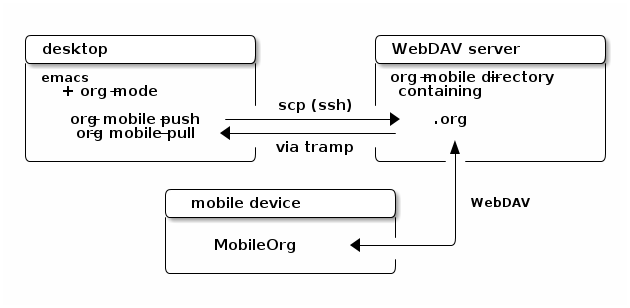

Org-mode Frequently Asked Questions
Table of Contents
- Is my question already a Frequently Asked Questions ?
- What is org-mode?
- Mailing list
- Keeping current
- Upgrading to Org 8.0/master and using the new export engine
- My Emacs ships with an older version Org-mode! How do I upgrade?
- How do I keep current with bleeding edge development?
- How do I update the info manual pages to the latest org-mode version?
- How can I keep local changes and still track Org-mode development?
- How can I use a stable release version instead of the bleeding edge master?
- How can I install an up-to-date version of org-mode without “make” tools?
- I don’t use git. Can I download bleeding edge .zip and .tar.gz archives?
- How do I install Org-mode through Emacs’ Package Manager?
- How do I install Emacs package manager?
- I don’t see Org-mode as an installation option in Package Manager Menu?
- How do I install Org-mode from a ELPA-compatible tarball?
- Why would I use ELPA tarballs instead of the snapshot tarballs?
- Setup
- How can I quickly browse all Org options?
- Can I use the editing features of org-mode in other modes?
- Why isn’t feature “X” working the way it is described in the manual?
- Can I get the visibility-cycling features in emacs-lisp-mode?
- Can I get the visibility-cycling features in outline-mode and outline-minor-mode?
- Can I save and restore the visibility state of an org-mode buffer?
- How can I keep track of changes in my Org files?
- Can I use Org-mode as the default mode for all README files?
- Can I use ido.el for completing stuff in Org?
- Should I use one big org file or multiple files?
- Why doesn’t C-c a call the agenda? Why don’t some org keybindings work?
- Why aren’t some of the variables I’ve customized having an effect?
- How can I make sure that timestamps appear in English?
- What does a minimal .emacs look like?
- What is the best setup for indenting?
- Can I migrate from Planner?
- Errors and general problems
- Is my Orgmode installation mixed?
- Opening Org files in Emacs leads to a crash
- When I try to use Org-mode, I always get the error message
(wrong-type-argument keymapp nil) - How can I control the application launched by Org-mode to open a certain file type like pdf, html…?
- Org-mode takes over the TAB key. I also want to use YASnippet, is there a way to fix this conflict?
- Org-mode takes over the S-cursor keys. I also want to use CUA-mode, is there a way to fix this conflict?
- Org-mode takes over the S-cursor keys. I also want to use windmove.el, is there a way to fix this conflict?
- Org behaves strangely: some keys don’t work, some features are missing, my settings have no effect, …
- Why doesn’t org-batch-agenda work under Win32?
- Org agenda seems very slow
- Visual-line-mode doesn’t work well with Org-mode
- Can I hide blocks at startup?
- After updating Org I get an error about an
invalid function - I use starter-kit and I get an error
(void-function org-pop-to-buffer-same-window) - (Filling a paragraph|Indenting a list|…) behaves strangely
- Faces and highlighting
- Outline
- Can I close an outline section without starting a new section?
- Can I add a TODO to a list item?
- Can I have two windows on the same Org-mode file, with different outline visibilities?
- Emacs outlines are unreadable. Can I get rid of all those stars?
- C-k is killing whole subtrees! I lost my work!
- Why aren’t commands working on regions?
- Why is a blank line inserted after headlines and list items?
- How can I promote or demote multiple headlines at once?
- What’s the deal with all the ellipses in my org outlines?
- How do I yank a subtree so it’s indented according to the point’s location?
- Can I read org-mode outlines in vim?
- Can I use another character than “*” to start a headline?
- Todos and Tags
- How can I automatically archive canceled tasks?
- How can I cycle through the TODO keyword of an entry?
- How do I track state changes for tasks in Org?
- Can I select the TODO keywords with a tag-like interface?
- How can I quickly set the tag of an entry?
- How can I change the colors of TODO keywords?
- Can I use a arbitrary character in a TODO keyword?
- How do I arrange for an item to be automatically marked DONE when all checkboxes are checked?
- Hyperlinks
- Why do I have to confirm the execution of each shell/elisp link?
- Can I use RET or TAB to follow a link?
- Can I keep mouse-1 clicks from following a link?
- How can I get completion of file names when creating a link?
- How can I use invisible targets within lists?
- Org-mode is not opening mailto links in my default mail client
- Can I use CamelCase links?
- Can I create links to Thunderbirds emails?
- Plain Lists
- How can I insert an empty line before each newly inserted headline, but not before each newly inserted plain-list item?
- How can I convert itemized lists to enumerated lists?
- How can I convert plain lists to headlines and vice versa?
- Is there a good way to create a description list?
- How can I export alphabetical lists to… alphabetical lists?
- Tables
- Will there ever be support for multiple lines in a table field?
- How can I make table alignment work with Asian character sets
- Can I plot data from a table?
- How can I fill a table column with incremental numbers?
S-RETin a table keeps increasing the copied numbers. How can I stop this?- Why does my table column get filled with #ERROR?
- How can I stop the table editor from creating new lines?
- How can I get table fields starting with “=”?
- How can I get a vertical bar “|” inside a table field?
- How can I change the indentation of an entire table without fixing every line by hand?
- In my huge table the realigning after each TAB takes too long. What can I do?
- Recalculation of my table takes too long. What can I do?
- When I export tables to HTML, they don’t have borders.
- Why does the Calc high precision (e. g.
p20) not work like expected? - Which float format shows the fraction part also when the latter is zero?
- How can I center tables in LaTeX output?
- Can I exclude columns from a table when exporting it?
- Markup
- Capture and remember
- Searches
- Agenda
- My agenda commands are slow. What to do?
- How can I change the advanced warning time for deadlines?
- How can I postpone a task until a certain date?
- Can I send myself an email containing tasks or other agenda info?
- How can I limit the agenda view to my “work” tasks?
- How can I limit the agenda view to a particular category?
- How can include all org files in a directory in my agenda?
- Why aren’t items disappearing from my agenda once they are marked done?
- How do I keep repeating timestamps from being displayed multiple times?
- What is the difference between SCHEDULED, DEADLINE, and plain timestamps?
- Can I add files recursively to my list of agenda files?
- Why does an item appearing at the wrong time of day in my agenda?
- How can I change the visibility of an item from the agenda?
- Is there any way to set org-mode so that tags don’t appear in the agenda view?
- I work late at night! How can I extend my current day past midnight?
- How can I let a task repeat until a certain date?
- Appointments/Diary
- Is it possible to include entries from org-mode files into my emacs diary?
- I want to add my Org scheduled/deadlined entries in my diary!
- How can I set up automatic reminders based on Org information?
- How can I make
apptnotice my Org appointments? - How can I create more complex appointments in my org-files?
- How can I schedule a weekly class that lasts for a limited period of time?
- How can I set an event to occur every day except Saturday and Sunday?
- How do I schedule events relative to Easter Sunday?
- How to schedule public holiday that is “the nearest Monday to DATE”?
- How to schedule public holiday on “the 4th Monday in October”?
- Why isn’t the agenda showing all the times I put under a single entry?
- Can I import iCal events/appts from Gnus?
- Export
- How do I ignore a headline?
- My old beamer presentations does not look the same with
ox-beamer.el - How can I export <my favourite element> as <my favourite environment> or how can I transform the export output using filters
- Can I get TODO items exported to HTML as lists, rather than as headlines?
- Can I export only a single subtree?
- How can I customize export options for a single subtree?
- How can I tell my calendar web application about appointments in my agenda files?
- How can I get Mac OSX 10.3 iCal to import my org-exported .ics files?
- How can I get Mac OSX 10.4 or later iCal to import my Org-exported .ics files?
- How can I remove timestamps and todo keywords from my exported file?
- How can I preserve faces when I export an agenda from the command line?
- How can I avoid dark color background when exporting agenda to ps format?
- How can I include e.g. an abstract in export to Latex and HTML?
- How can I get colored source code when exporting to LaTeX?
- How can I export to Latex Beamer?
- How can I use RefTeX in Org-mode files for LaTeX export and in Org-babel LaTeX code blocks?
- How can I use XeLaTeX for LaTeX export instead of pdfLaTeX?
- Why is my exported PDF file almost unreadable?
- Can I add attributes to a link or an image in HTML export?
- How can I export an org file to rtf, odt (Open Office), or doc (Word)?
- ODT export aborts on my Windows machine as I don’t have zip installed. Where can I find a zip utility?
- I cannot open an exported
*.odtfile in LibreOffice because it is corrupt. What do I do? - How can I specify ODT export styles?
- Can I omit the title in the LaTeX export?
- How can I use arbitrary colors for words/sentences in HTML export?
- How can I suppress the page number in the footer of an exported PDF?
- Backup
- Org-mode on mobile devices
- Mathjax
- Tips and Tricks
- Google Summer of Code (GSoC)
Is my question already a Frequently Asked Questions ?
You can find answers by asking on the mailing list, but people will probably direct you here, so it is safer to start by checking this FAQ.
What is org-mode?
Can Org-mode do “x”? Does org have “x” feature?
In its default setup, Org-mode offers a simple outlining and task management environment. But it also has a huge number of features and settings “under the hood.” Advanced users have configured Org-mode for almost every conceivable use scenario.
Org-mode has a very active community and rich and extensive documentation. Before emailing the mailing list to ask whether Org-mode has a particular feature or setting, please consult the following:
- Read/search the manual.
- https://orgmode.org/manual/index.html
- Make sure to check out the following indexes:
The manual is also easily available from within emacs.
To read the manual within emacs, you can evaluate
(info "(org)")within emacs—i.e., typeC-x C-eafter the closing paragraph of the info expression above.You can also type
M-x infoand navigate to “Org Mode”.You can search the entire manual by typing
C-s term. Keep pressingC-sto cycle through the results
- https://orgmode.org/manual/index.html
Search the mailing list archives at lists.gnu.org or orgmode.org/list.
There is a good chance that the feature you are looking for has already been discussed (most likely several times).
- Check for features from within emacs.
- Emacs has a wonderful built-in help system.
- You can browse (and change) most customization options by typing
M-x org-customize. - You can check for a feature by typing
M-x apropos [RET] [word]orC-h a word. This will search for all functions and variables matching the term (or regexp) you enter. You can browse (and search for) org functions, variables, and faces by using
M-x describe-variable(C-h v),M-x describe-function(C-h f), orM-x describe-face.After invoking one of these commands, simply type
org-[TAB]to see a full list of relevant functions or variables or faces. You can then drill down further: e.g.,org-export-[TAB]for export features.
Checkout the tutorials on Worg.
Several of these tutorials discuss advanced features (e.g., searching, custom agenda commands, tables, publishing) of Org-mode in depth.
There are many other resources on Worg as well:
- Org Customization
- Includes a guide for beginners.
- Org Hacks
- User-generated modifications and add-ons.
- Org Glossary
- An explanation of basic Org-mode terms and concepts.
Can I implement a GTD workflow with Org-mode?
Yes, you can. Check for discussions and pointers here.
What is the difference between Org and TaskPaper?
There is really no difference. Org is as simple as TaskPaper. It is just that, when using Org within Emacs, it lets you do many things that you wouldn’t be able to do with TaskPaper. Yes, TaskPaper is fiddle-proof and people using Emacs tends to like fiddling (which is orthogonal to the idea of using todo-lists efficiently), but this is just a matter of discipline and common sense, not one of Org’s design.
Read Carsten’s enlightening statement on this.
What is the meaning of the Unicorn on Org’s website?
The Unicorn is the logo of Org-mode because:
- Org-mode is the UNICs of ORgaNizers.
- Org-mode is an Emacs mode, so it makes sense to use an animal similar or related to the gnu used for GNU Emacs.
- Org-mode is meant to show you the way, and an animal with two horns can not do this very well, can it?
- Unicorn tears are said to reverse petrification, and wasn’t this how we all felt before getting to some degree of time and task management?
- It will take forever to learn everything there is to know about a unicorn.
- A unicorn is a fabulous creature. Org-mode wants to be a fabulous creation.
Using a unicorn was originally Bastien Guerry’s idea. His friend, the french artist Christophe Bataillon, designed the logo for us, and Greg Newman gave it a refresh some time later. Bastien writes why he chose a unicorn:
The first reason is not linked to the animal, but to the sounding of the word “Unicorn” - because Org gives you a /uni/que way of producing files in several format (HTML, LaTeX, etc.).
The second reason is that a Unicorn doesn’t really exist, it is just something you can dream about, and make others believe it does exist. Just like the perfect organizer.
There was a thread about unicorns on the mailing list. Christopher Suckling posted a link showing how to make a simple foldable unicorn (very appropriate for an outlining program!).
Tim Burt made a very complicated one which is now a treasured possession of the Org-mode author.
- Official logo:
 This logo is available in a number of different formats including
Photoshop .psd and scaleable vector graphics .svg here.
This logo is available in a number of different formats including
Photoshop .psd and scaleable vector graphics .svg here. - An alternative version from Christophe Bataillon (c):
- Chris Randle made a text version using the logo and glassgiant.com:
- Stefan Vollmar made a pdf version (here in png) using “a simple threshold technique”.
- Tim Burt made a folded Unicorn to match the spirit of Org - see the whole set of pictures on his flickr page.
- Are unicorns real? Answer here by Ross Laird.
{kind=link}
{kind=link}
Is Org’s documentation written in Org?
As of January 2018, yes. You can access the .org source of the manual
on the repository.
Previously, Org mode documentation was written in TeXinfo, which is the standard format for Emacs documentation. Today, the Org mode documentation is exported to TeXinfo with the ox-texinfo exporter written by Jonathan Leech-Pepin and Nicolas Goaziou.
Is there a bibtex entry for the Org manual?
Yes. Please evaluate this function and run M-x
org-insert-manual-bibtex-citation-at-point RET.
(defun org-insert-manual-bibtex-citation-at-point () "Insert a BibTeX citation of the Org manual at point." (interactive) (insert "@book{dominik10:_org_mode_refer_manual, author = {Carsten Dominik}, title = {The Org-Mode 7 Reference Manual: Organize Your Life with GNU Emacs}, publisher = {Network Theory}, year = 2010, address = {UK}, note = {with contributions by David O'Toole, Bastien Guerry, Philip Rooke, Dan Davison, Eric Schulte, and Thomas Dye} }" (message "Thanks for quoting the Org manual!")))
Please check the Org papers page for more references related to Org.
Mailing list
I think my Org-mode is broken! How do I report a bug?
- Make sure you are running the latest version of Org-mode.
- Read the Feedback section of the manual.
- Provide a minimal example that duplicates the bug.
- Create a minimal .emacs file and start emacs with that file as detailed in these instructions.
- Create a sample, minimal .org file that reliably reproduces the problem and post it to the mailing list.
- Some users call this an “ECM”, a French acronym that means a “minimal complete example”.
What is an “ECM”?
This is a French acronym used by some mailing list members; it stands for “Exemple Complet Minimal”, or “Complete Minimal Example”. The term refers to test files that can reliably reproduce a bug with the minimal amount of code. When you report a bug to the mailing list, you should provide a minimal .org file (with no more text than necessary) that demonstrates the bug. See this post for more information.
What should I do before contacting the mailing list?
The Org-mode mailing list is a high volume list, in which community members discuss use cases, configuration, bugs, and developments.
If you are new to Org-mode, please read/search the excellent manual (and pay special attention to the indexes) before asking your question.
You should also search the mailing list at lists.gnu.org or orgmode.org/list to see if your issue has already been discussed.
See this faq for more details.
Why hasn’t my email to the mailing list shown up yet?
The org-mode mailing list is moderated. Thus, if you are not subscribed to the mailing list, your mail will only appear on the list after it has been approved by a moderator. To ensure that your mail appears quickly, please subscribe to the list.
I read the mailing list through gmane. Should I subscribe?
The org-mode mailing list is available via nntp at
news.gmane.io/gmane.emacs.orgmode. Many participants in the list
prefer to read the list in a newsreader, such as Gnus, instead of
receiving emails. If you choose to read the list via nntp, you can
still subscribe to the list and then opt not to receive any emails
on the mailman settings page (see the “Mail Delivery” setting).
This will ensure that your messages to the list get through quickly, reduce the work load of the mailing list moderators (who need to clear every mail from non-members), and provide more accurate information about the number of list readers.
Keeping current
Upgrading to Org 8.0/master and using the new export engine
My Emacs ships with an older version Org-mode! How do I upgrade?
Org-mode develops quickly, which means that versions of Org-mode shipped with Emacs are more or less out-of-date. If you’d like to upgrade to the most recent version of org-mode, you have a number of options.
- Download the most recent release of org-mode as zip or tarball and follow the installation instructions in the manual.
- Clone and install the development git repository as explained here. If you don’t want to run the bleeding edge, you can still use git to track the most recent stable releases.
- Install and updated org-mode automatically through the Emacs Package Manager as explained in this FAQ.
Note: Please also see Is my Orgmode installation mixed? for a common issue with mixed installations.
How do I keep current with bleeding edge development?
Org-mode is developed in Git. You can keep up-to-date with Org-mode developement by cloning the Org-mode repository and refreshing your copy with latest changes whenever you wish. You only need to use two Git commands (clone and pull.) Here are the steps in brief (assuming a POSIX compatible shell and please customize locations to suit your setup):
Select a location to house the Org-mode repository (approx. 40 MB; includes documentation, compiled elisp files and history going all the way back to v4.12a)
$ mkdir $HOME/elisp && cd $HOME/elisp
Clone the Org-mode Git repository.
Recommended approach:
$ git clone git@code.orgmode.org:bzg/org-mode.git
(See The first time you contribute to Worg for how to gain access).
Compile and install Org-mode and build documentation.
$ cd $HOME/elisp/org-mode && make
Please note that you can choose to not compile at all and run using source
.elfiles only (compiled files speed things up), but you will still need to generate the autoload files.$ cd $HOME/elisp/org-mode && make uncompiled
If you’d like to install org-mode someplace outside the source tree (private or system-wide), you should edit
local.mkto point to the appropriate install location. You may need administrator rights to do a system-wide installation.$ cd $HOME/elisp/org-mode && make install
- This is where you configure Org-mode with Emacs. Please refer to Org tutorials.
Keeping up-to-date.
Cloning the repository is a one time activity. From this point onwards you only need to pull the latest changes, which the Makefile is set up to do automatically for certain make targets.
$ cd $HOME/elisp/org-mode && make update
or if you immediately want to install as well
$ cd $HOME/elisp/org-mode && make update2
Actually in this case it is recommended to run the test suite before installation so that you don’t install a version that fails testing.
$ cd $HOME/elisp/org-mode && make up2
- You should reload Org-mode to have the changes take effect (if
you are not restarting Emacs, which is recommended). Also since
the intention is to “keep up” with Org-mode, you should visit
updated sections of documentation for latest updates (use
git log.) As you use your repository over time it will accumulate loose objects. You can reduce the total size of your git repository with
$ git gc
which will consolidate loose git objects into pack files. This reduces the size of the repository and speeds up data access to the objects.
How do I update the info manual pages to the latest org-mode version?
This is not a problem if org-mode is installed system-wide, which automatically takes care of this issue! Since org-mode already ships with Emacs, a rather common problem among users is “How do I update the info documentation to the latest version of org-mode?”. There are three ways to achieve this if for whatever reason you can’t install into the standard, system-wide info directory:
You can set the
INFOPATHenvironment variable in your login script like this:# ~/.bash_profile export INFOPATH=/path/to/org-mode/info:$INFOPATH ...
/path/to/org-mode/infois wherever you install org-mode.You can achieve the same with elisp like this:
;; Info directory (add-to-list 'Info-additional-directory-list (expand-file-name "/path/to/org-mode/info"))
You should specify the same location in the Makefile while installing org-mode like this:
# Where local software is found prefix=/path/to/emacs-root ... # Where info files go. infodir = $(prefix)/share/info
How can I keep local changes and still track Org-mode development?
There is no need to do this anymore for the purpose of adapting the
build system to the local environment, since this can now be
specified in local.mk. However, there may be a need to make other
local changes to Org.
Say you want to make minor changes to the org.el or any other
version controlled file from Org and you want to keep these changes
on top of the master branch from Org. Create a local branch for
your changes on top of origin/master as follows:
$ git checkout -b local origin/master $ git config branch.local.rebase true # Make your changes to the sources and create a new commit $ git commit -am 'My local changes to Org' # Update to a newer version $ git pull
Now each time you pull new commits from the distribution repository
your local commits will be rewound and replayed on top of the new
origin/master. You would normally work on your local branch which
includes your custom commits; there’s no need to switch back to the
master branch.
If you get a conflict during a git pull (a change in Org and one
of your local changes try to alter the same line of code) you will
need to edit the file with the conflict to fix up the conflicting
lines and then tell git that you have resolved the conflict:
git pullfails with a conflict- edit the file: look for the conflict markers
>>>>>>>and<<<<<<<and either keep one version or create a new one and remove all conflict markers while doing this. git addthe file to the index to mark the conflict resolvedgit rebase --continue- lather, rinse, and repeat 2-4 as needed
Note that it is possible to have silent conflicts when a change in Org and one of your local changes do not edit the same line of code, but are logically incompatible — for example Org might have changed to assume roses are red while you’ve made a local change that defines my roses are yellow in some other place. Git will not warn you about such conflicts (it doesn’t understand what the code does, of course).
At anytime during the rebase conflict resolution you can say “oops this is all wrong - put it back the way it was before I did a pull” using
$ git rebase --abort
How can I use a stable release version instead of the bleeding edge master?
The master branch of the git repository always contains the bleeding
edge development code. This is important for Org’s fast development,
because code on master gets checked out by many people daily and we
quickly receive bug reports if something is wrong. On rare occasions,
this code may not function perfectly for a limited time while we are
trying to fix things. It is therefore recommended to keep a
known-good version of org-mode installed outside the source tree and
always run the full test suite before using a new version from master.
Not everyone like to use this bleeding-edge code and face the danger
to hit a surprising bug. The branch maint is specifically for
collecting only fixes for known bugs between releases. If you don’t
want to wait for a new release, but don’t want to live on the bleeding
edge, consider using maint.
From time to time, we make a release by merging all the new features
from master into maint. This typically happens when the
maintainers feel that
- they have reached a good point in the development
- the code has a feature set that should stay and be supported in the future
Stable releases are used as the basis for alternative distributions of Org, and they are also the code that gets merged into the Emacs distribution. If you want to work only with stable releases, you can always download them here, but you can also also use the git repository to keep automatically up-to-date with the most recent stable releases (and save bandwidth!). Here’s how to do so:
- Run a specific stable release
In the repository, do
$ git fetch --tags $ git tag
To see which release tags are available. Let’s say you decide to use
release_7.01f.$ git checkout release_7.01f
This set the working tree of the repository to the state of Org at the moment of release 7.01f. You can then run Org from the repository be sure to use the stable release while development continues on the master branch.
Later, when we release 7.02, you can switch to that using
$ git fetch --tags # to get all the new stuff $ git tag $ git checkout release_7.02
- Always run the most recent stable release
Alternatively, if you just want to always run whatever the latest stable release is, you can do
$ git checkout -b stable origin/maint
and then regularly update this branch by doing
$ git pull
How can I install an up-to-date version of org-mode without “make” tools?
If you are using org-mode on a computer that lacks developer tools for compiling software, such as GNU Make, you will have to use a different installation method than the one outlined in the manual. Please see this description for compiling org-mode without make so you can install a recent version of org-mode without using the full build system.
I don’t use git. Can I download bleeding edge .zip and .tar.gz archives?
Yes. You can download org-latest.zip or org-latest.tar.gz of Org-mode – these archives are updated every day at midnight.
Alternatively, you can download a tar.gz release archive.
How do I install Org-mode through Emacs’ Package Manager?
Daily builds of Org-mode are distributed as an ELPA package from both GNU Emacs Lisp Package Archive as well as from the Org-mode Emacs Lisp Archive.
Steps for installing Org with package manager:
- Do
M-x list-packagesto browse available packages. - If the above command is unavailable you need to install the package manager before proceeding ahead.
- If you see
orgas an available package, skip to step 5. If you are here it means that org is unavailable in the GNU’s archives. Report this discrepancy to Orgmode mailing list.
In the meanwhile, you can manually download the tarball and install it. Refer to this FAQ entry for further information.
- Press
ito mark the package for installation - Press
xto install - Reload Emacs
Use
M-x locate-library RET org. If your installation is successful you would something like the following:Library is file ~/.emacs.d/elpa/org-20110403/org.elc
How do I install Emacs package manager?
If you are running Emacs 24 or find the command M-x list-packages
available you already have the package manager installed.
Steps for installing package manager on emacs-23:
- Download the package manager package.el
Add the following to your
.emacsand reload Emacs.;; change "~/elisp/" as appropiate (setq load-path (cons "~/elisp" load-path)) ;; Add the below lines *at the beginning* of your .emacs. (require 'package) (package-initialize)
I don’t see Org-mode as an installation option in Package Manager Menu?
Emacs Package Manager is a very recent addition to Emacs. Work is under way to have have Org-mode seamlessly integrate with Emacs’ Package Manager. As a result, it will be some time before the Org-mode packages are available and usable from either GNU or Org-mode package archives.
In the meanwhile, you can install Org-mode via package manager through ELPA-compatible tar. Refer to this FAQ entry for more information.
How do I install Org-mode from a ELPA-compatible tarball?
Org-mode is distributed as an ELPA-compatible tar which can be used in conjunction with Emacs’ package manager.
- If you are already running Org-mode, note the current version reported by M-x org-version.
- Download the latest tarball from Org-mode repo.
Do
M-x package-install-file. When prompted forPackage file name, point it to .tar file downloaded in step 2.You will now see Package Manager compiling the files and installing it.
- Reload emacs. This step is very important.
- Note the version of the new installation using M-x org-version. If the new and old versions are different, the installation is done and you are all set to enjoy the updated Org-mode. Otherwise skip to step 6.
- Review you load-path using
C-h v load-path. Most likely that your old installation path takes precedence over the path chosen by package manager (which is typically~/.emacs.d/elpa/...). Fix this anamoly by moving(package-initialize)line in .emacs to a more appropriate location.
Why would I use ELPA tarballs instead of the snapshot tarballs?
ELPA-tarballs automate much the process of upgrading org-mode. Much of the following grunt work is done automatically by the Package Manager:
- Downloading, compiling, and activating of org-mode (including
setting org-mode’s
load-pathand autoloads). - Updating info files.
Setup
How can I quickly browse all Org options?
M-x org-customize RET
See also Carsten’s Org customize tutorial and this customization guide for details.
Can I use the editing features of org-mode in other modes?
Not really—but there are a few editing features you can use in other modes.
- For tables there is
orgtbl-modewhich implements the table editor as a minor mode. (To enable, typeM-x orgtbl-mode) - For ordered lists there is
orgstruct-modewhich allows for easy list editing as a minor mode. (To enable, typeM-x orgstruct-mode)
You can activate these modes automatically by using hooks:
(add-hook 'mail-mode-hook 'turn-on-orgtbl) (add-hook 'mail-mode-hook 'turn-on-orgstruct)
For footnotes, there is the function org-footnote-action, which
works in non-org buffers. This function is a powerful tool for
creating and sorting footnotes. To use it globally, you can add the
following keybinding to your .emacs file (requires Org 6.17 or
greater):
(global-set-key (kbd "C-c f") 'org-footnote-action)
For other features you need to switch to Org-mode temporarily, or prepare text in a different buffer.
Why isn’t feature “X” working the way it is described in the manual?
Org-mode develops very quickly. If you are using a version of Org-mode that shipped with emacs, there is a good chance that it is somewhat out of date.
Many of the users on the Org-mode mailing list are using either a recent release of Org-mode or the development version of org-mode from the git repository.
If some settings and features aren’t working the way you expect, make sure that the version of the manual you are consulting matches the version of Org-mode you are using.
- You can check which version of Org-mode you are using by
selection
Org --> Documentation --> Show Versionin the Emacs menu. - The online manual at orgmode.org corresponds to the most recent release.
- The manual at www.gnu.org corresponds to the version of Org-mode released with the latest official Gnu Emacs release. Compared with the manual at the orgmode.org, the manual at www.gnu.org is somewhat out of date.
For instructions on how to stay current with Org-mode, consult this FAQ or follow the instructions on the official Org-mode site.
Can I get the visibility-cycling features in emacs-lisp-mode?
Yes. This snippet in your .emacs will bind C-M-] and M-] to global
and local cycling:
(global-set-key (kbd "C-M-]") (lambda () (interactive) (org-cycle t))) (global-set-key (kbd "M-]") (lambda () (interactive) (ignore-errors (end-of-defun) (beginning-of-defun)) (org-cycle)))
Can I get the visibility-cycling features in outline-mode and outline-minor-mode?
Yes, these functions are written in a way that they are independent of
the outline setup. The following setup provides standard Org-mode
functionality in outline-mode on TAB and S-TAB. For
outline-minor-mode, we use C-TAB instead of TAB,
because TAB usually has mode-specific tasks.
(add-hook 'outline-minor-mode-hook (lambda () (define-key outline-minor-mode-map [(control tab)] 'org-cycle) (define-key outline-minor-mode-map [(shift tab)] 'org-global-cycle))) (add-hook 'outline-mode-hook (lambda () (define-key outline-mode-map [(tab)] 'org-cycle) (define-key outline-mode-map [(shift tab)] 'org-global-cycle)))
Or check out outline-magic.el, which does this and also provides promotion and demotion functionality. outline-magic.el is available at Outline Magic.
Can I save and restore the visibility state of an org-mode buffer?
Well, no—at least not automatically. You can, however, control the visibility of an org-file or of individual trees by adding instructions to your org file. See this section of the manual for more information.
How can I keep track of changes in my Org files?
Use git to track the history of the files, use a cronjob to check in changes regularly. Such a setup is described by Bernt Hansen in this message.
Can I use Org-mode as the default mode for all README files?
Add the following to your .emacs file:
(add-to-list 'auto-mode-alist '("README$" . org-mode))
You can even make it the default mode for any files with unspecified mode using
(setq default-major-mode 'org-mode)
Can I use ido.el for completing stuff in Org?
Yes, you can. If you are an ido user and ido-mode is active, the
following setting will make Org use ido-completing-read for most
of its completing prompts.
(setq org-completion-use-ido t)
Should I use one big org file or multiple files?
Org-mode is flexible enough to accomodate a variety of organizational and time management schemes. Org’s outline cycling and convenient editing and navigation commands make it possible to maintain all of your projects and notes in a single file. But org-mode’s quick and easy hyperlinks, along with easy refiling of notes and todos, also make it a delight to maintain a private “wiki” consisting of multiple files.
No matter how you organize your org files, org-mode’s agenda commands make it easy to search all your notes and gather together crucial data in a single view.
Moreover, several org-mode settings can be configured either globally in
your .emacs file or locally (per file or per outline tree). See the
manual for more details. For an example of local customizations see this
FAQ.
Here are a few ideas for organizing org-mode files:
- A single file for all your projects and notes.
- One file per project.
- One file per client.
- One file per area of responsibility or type of work (e.g., household, health, work, etc.).
- One file for projects, one for appointments, one for reference material, one for someday/maybe items, etc.
- A wiki of hyperlinked files that grows and adapts to meet your needs.
For more ideas, see some of the links on the org-tutorial index or this page on org-mode and GTD.
Why doesn’t C-c a call the agenda? Why don’t some org keybindings work?
Org-mode has a few global keybindings that the user must set explicitly in
an .emacs file. These keybindings include the customary shortcut for
calling the agenda (C-c a). If nothing happens when you type C-c a,
then make sure that the following lines are in your .emacs file:
;; The following lines are always needed. Choose your own keys. (add-to-list 'auto-mode-alist '("\\.org\\'" . org-mode)) (global-set-key "\C-cl" 'org-store-link) (global-set-key "\C-ca" 'org-agenda) (global-set-key "\C-cb" 'org-iswitchb)
You may, of course, choose whatever keybindings work best for you and do not conflict with other modes.
Please see this section of the manual if you have additional questions.
Why aren’t some of the variables I’ve customized having an effect?
Some org variables have to be set before org.el is loaded or else they
will not work. (An example is the new variable
org-enforce-todo-dependencies.)
You should also make sure that you do not require any other org-...
files in your .emacs file before you have set your org variables,
since these will also cause org.el to be loaded. To be safe, load org
files after you have set your variables.
How can I make sure that timestamps appear in English?
If your system’s locale is not set to English, but you would like the timestamps in your org-mode files to appear in English, you can set the following variable:
(setq system-time-locale "C")
What does a minimal .emacs look like?
Using a stripped down minimal .emacs files removes broken custom settings as the cause of an issue and makes it easy to reproduce for other people. The example below has system-specific paths that you’ll need to change for your own use.
(add-to-list 'load-path (expand-file-name "~/git/org-mode/lisp")) (add-to-list 'auto-mode-alist '("\\.\\(org\\ |org_archive\\|txt\\)$" . org-mode)) (setq org-agenda-files '("/tmp/test.org")) (require 'org) (require 'org-habit) (global-set-key "\C-cl" 'org-store-link) (global-set-key "\C-ca" 'org-agenda) (global-set-key "\C-cb" 'org-iswitchb)
You can save the minimal .emacs file to ~/minimal.emacs, add suspect configuration code to it, then start emacs something like this:
emacs -Q -l ~/minimal.emacs
On OS X, starting emacs with minimal configuration might look something like this:
/Applications/emacs.app/Contents/MacOS/Emacs -Q -l ~/minimal.emacs
What is the best setup for indenting?
Indentation, both appearance and behavior, is a matter of personal
preferences. You may try if the following adjustments suits better
for you than the defaults. Set org-adapt-indentation to have
content aligned to headline titles. Disable electric-indent-mode to
avoid automatic indentation in response to RET key.
In more details, org-adapt-indentation controls indentation with
regards to previous element. Apparent effect is increased indentation
for content of deeper nested headings. The variable accepts three
values: nil (no special indentation), t (always indent relatively
to the element above) and headline-data (only indent the
PROPERTIES/LOGBOOK drawers relatively to the current level). Value
t is suitable for short entries especially if you plan to share your
documents with someone who does not use Emacs. If you just want to
make heading level more prominent then consider adding visual left
margin using #+STARTUP: indent as described in the Clean View
section of the manual. The option works without adding extra spaces
to the document text.
Configured indentation may be applied in response to RET or to
C-j depending on the state of electric-indent-mode. The following
tables summarizes the difference. Version number is added to column
header if it describes default settings.
With electric-indent-mode enabled:
| org-adapt-indentation => | nil (Org >= 9.5) | t (Org 9.4) | headline-data |
|---|---|---|---|
| RET after a headline | Do not indent | Indent | Do not indent |
| C-j after a headline | Do not indent | Do not indent | Do not indent |
| RET elsewhere | Indent wrt previous | Indent wrt previous | Indent wrt previous |
| C-j elsewhere | Do not indent wrt prev | Do not indent wrt previous | Do not indent wrt previous |
| Insert PROPERTIES/LOGBOOK | Do not indent | Indent wrt headline | Indent wrt headline |
With electric-indent-mode disabled:
| org-adapt-indentation => | nil | t | headline-data (Org < 9.4) |
|---|---|---|---|
| RET after a headline | Do not indent | Do not indent | Do not indent |
| C-j after a headline | Do not indent | Indent | Do not indent |
| RET elsewhere | Do not indent | Do not indent wrt previous | Do not indent wrt previous |
| C-j elsewhere | Indent wrt previous | Indent wrt previous | Indent wrt previous |
| Insert PROPERTIES/LOGBOOK | Do not indent | Indent wrt headline | Indent wrt headline |
Do not try to avoid or to ignore indentation of heading body or
properties drawer determined by current state of
org-adapt-indentation and electric-indent-mode by pressing C-j
instead of RET (or vice versa). The result is transient and you will
lose formatting when you refile heading or change its level (promote
or demote it).
You may have noticed recommendation to disable electric-indent-mode
to restore behavior prior to Org 9.4. In Org 9.5
org-adapt-indentation default value changed to nil and, more
importantly, a number of bugs related to indentation were fixed.
Using RET with enabled electric-indent-mode should be convenient
now. Just customize org-adapt-indentation variable accordingly to
you preferences.
Can I migrate from Planner?
Yes. This perl script or this Perl script can help.
Errors and general problems
Is my Orgmode installation mixed?
Emacs is distributed with a version of Orgmode bundled with it. A
common problem among users who install a newer version of Orgmode
separately is a mixed install where Emacs loads some files from the
bundled and the rest from the latest version. This can lead to
unending troubles in the future. With a recent installation of
Org mode M-x org-version will indicate if the installation is mixed.
With somewhat older Org mode installations, the procedure is more
involved and indeterminate. An easy first step is to look
at the output of M-x org-version.
- Good
Org-mode version 7.8.11 (release_7.8.11-448-g1737d3 @ /path/to/org-mode/lisp/)- Bad
Org-mode version 6.33x (release_7.8.11.409.ga3778)
A second step is to go through the output of list-load-path-shadows
line-by-line to get hints to what in your configuration is causing
the issue. Among the most common reasons is Orgmode gets loaded
before the load-path variable is updated to include the
installation directory of the latest Orgmode. To avoid issues like
this, it is recommended that the load path is updated very early on
in your init file.
Note: The formatting of the version information, as shown in the
examples above, will be different for older Org mode releases,
e.g. Org-mode version 7.8.02.
Opening Org files in Emacs leads to a crash
The only known case where Org-mode can crash Emacs is when you are
using org-indent-mode with Emacs 23.1 (in fact, any version of
Emacs before version 23.1.50.3). Upgrade to Emacs 23.2 and the
problem should go away.
When I try to use Org-mode, I always get the error message (wrong-type-argument keymapp nil)
This is a conflict with an outdated version of the allout.el, see the Conflicts section in the manual
How can I control the application launched by Org-mode to open a certain file type like pdf, html…?
If you want special control about how Org-mode opens files, see the
variables org-file-apps, org-file-apps-defaults-gnu,
org-file-apps-defaults-macosx, org-file-apps-defaults-windowsnt.
However, normally it is best to just use the mechanism the operating-system provides:
- GNU/Linux systems
You you have to check your mailcap settings, find the files:
/etc/mailcap or $HOME/.mailcap
and modify them accordingly. Please read their manual entry.
- Windows systems
- for html pages you may configure the
browse-url-variables through the Customize interface, - the pdf files are automatically opened with Acrobat Reader (if it is installed)
- for html pages you may configure the
- Mac OSX
Change the application responsible for this file type by selecting such a file in the Finder, select
File->Get Infofrom the menu and select the application to open this file with. Then, to propagate the change to all files with the same extension, select theChange allbutton.
Org-mode takes over the TAB key. I also want to use YASnippet, is there a way to fix this conflict?
yasnippet is yet another snippet expansion system for Emacs. It is inspired by TextMate’s templating syntax.
- watch the video on YouTube
- see the intro and tutorial
Note: yasnippet is not compatible with org-indent-mode currently
there is no known way to use both successfully with yas/trigger-key
set to TAB (or [tab] etc…)
The way Org-mode binds the TAB key (binding to [tab] instead of
\t) overrules yasnippets’ access to this key. The following code
fixes this problem:
(add-hook 'org-mode-hook (lambda () (org-set-local 'yas/trigger-key [tab]) (define-key yas/keymap [tab] 'yas/next-field-group)))
If the above code doesn’t work (which it may not with later versions of yasnippet). Then try the following
(defun yas/org-very-safe-expand () (let ((yas/fallback-behavior 'return-nil)) (yas/expand))) (add-hook 'org-mode-hook (lambda () ;; yasnippet (using the new org-cycle hooks) (make-variable-buffer-local 'yas/trigger-key) (setq yas/trigger-key [tab]) (add-to-list 'org-tab-first-hook 'yas/org-very-safe-expand) (define-key yas/keymap [tab] 'yas/next-field)))
Rick Moynihan maintains a git repository (or Eric’s fork of the same) with YASnippets for Org-mode.
Org-mode takes over the S-cursor keys. I also want to use CUA-mode, is there a way to fix this conflict?
Yes, see the Conflicts section of the manual.
Org-mode takes over the S-cursor keys. I also want to use windmove.el, is there a way to fix this conflict?
Yes, see the Conflicts section of the manual.
Org behaves strangely: some keys don’t work, some features are missing, my settings have no effect, …
When this sort of things happen, it probably is because Emacs is
loading an old version of Org-mode instead of the one you expected.
Check it with M-x org-version.
This happens because Emacs loads first the system org-mode (the one
included with Emacs) before the one in your directory. Check the
load-path variable; you might see that your org-mode appears after
the system-wide path; this is bad.
You should add your directories to the load-path at the beginning:
(add-to-list 'load-path "~/.emacs.d/org-mode/lisp")
Function add-to-list adds at the beginning. Don’t use append because
it appends at the end.
This wrong version loading may also happen if you have a byte-compiled
org.elc from an old version together with a new org.el. Since
Emacs prefers loading byte-compiled files (even if the .el is
newer), it will load the old Org-mode.
Why doesn’t org-batch-agenda work under Win32?
When I run the example batch files to print my agenda to the console under Win32 I get the failure:
End of file during parsing
and no agenda is printed.
The problem is the use of single quotes surrounding the eval in the emacs command-line. This gets confused under Win32. All string parameters with spaces must be surrounded in double quotes. This means that double quotes being passed to the eval must be escaped.
Therefore, instead of the following:
<path to emacs>\emacs.exe -batch -l ~/_emacs_org \
-eval '(org-batch-agenda "a")'
you need to use the following:
<path to emacs>\emacs.exe -batch -l ~/_emacs_org \ -eval "(org-batch-agenda \"a\")"
(all on one line, of course).
Org agenda seems very slow
If it takes a long time to generate or refresh the agenda, you might
want first check which version of org-mode you are using. There have
been major optimizations of org-agenda since 6.21b, which was the
version of org-mode released with Emacs 23. If you are using 6.21b or
earlier (you can check with M-x org-version), then you might want to
consider upgrading to a more recent version of org-mode.
Here are some other ideas for speeding up the agenda:
Use a one day agenda view (rather than a seven day view).
(setq org-agenda-ndays 1)Archive inactive items to separate files.
C-c C-x C-s(org-archive-subtree)Do not include the global todo list in your agenda view.
(setq org-agenda-include-all-todo nil)
Make sure that your org files are byte-compiled.
I.e., make sure there are files ending in
.elcin your org installation directory.Limit your agenda files (
org-agenda-files) to files that have active todos and or projects.If you have a number of older reference files—i.e., files you search only occasionally—in your agenda files list, consider removing them from your agenda files and adding them to
org-agenda-text-search-extra-filesinstead. Similarly, you might consider searching some of your older reference files withM-x grepso that Org-mode does not have to load them into memory when the agenda is called.
Visual-line-mode doesn’t work well with Org-mode
Visual-line-mode “soft wraps” lines so that the visual edge of the buffer is considered a line break for purposes of navigation, even though there is no line break in reality.
In older versions of org-mode, org-beginning-of-line and org-end-of-line do not work well with visual line mode. (The two commands disregard soft line breaks and move to the beginning and end of the hard line break.) A patch was introduces to fix this behavior in July of 2009.
If you are using an older version of Org-mode, you can:
- Add a hook to turn off visual line mode.
- Add the following to your
.emacs:
(add-hook 'org-mode-hook (lambda () (define-key org-mode-map "\C-a" 'move-beginning-of-line) (define-key org-mode-map "\C-e" 'move-end-of-line)))
Can I hide blocks at startup?
Yes:
(setq org-hide-block-startup t)
Or use
#+STARTUP: hideblocks
on a per-file basis.
After updating Org I get an error about an invalid function
In almost all cases an invalid function error is caused by an
unclean Org-mode source directory. Cleaning it up and recompiling
should fix the problem
cd /path/to/orgmode make clean make
In some cases, bits and pieces of org are loaded from various places (previous installs, the built-in install of org that came with whatever emacs version you have) and things get very confused. In all cases, cleaning up every last bit of org installation from everywhere and reinstalling org from git should restore sanity. See also the next question.
I use starter-kit and I get an error (void-function org-pop-to-buffer-same-window)
This is a particular instance of the previous question but with some twists and turns, and a solution culled from various postings on the mailing list.
starter-kit loads the site-file version of org (the one that came with your emacs install). Then when you load your init file, the local version is added to the front of load-path, so it looks as if things are originating there, but the damage is already done: you have a “frankenstein” org.
One possible solution is to add (package-initialize) to the primary init.el before starter-kit gets going. This will pick up the local install so that the built-in version never enters to muddy the picture.
(Filling a paragraph|Indenting a list|…) behaves strangely
Many filling/indenting problems have been reported on the mailing list: many of those were bugs (that have been fixed), but quite a lot are caused by people using the filladapt package, which is fundamentally incompatible with Org, which has its own facilities for these tasks. If you see strange behavior in this area, first check if you are using filladapt: visit an org file and check the modeline for “Filladapt”.
If filladapt is on, you want to turn it off before investigating further. Anthony Lander suggested on the mailing list the following method to turn off filladapt mode when you visit org files:
(add-hook 'org-mode-hook 'turn-off-filladapt-mode)
This should be placed in your .emacs (or other initialization file) after org is loaded.
Faces and highlighting
Org-mode has a lot of colors? How can I change them?
This is a question that applies to Emacs as a whole, but it comes up quite frequently on the org-mode mailing list, so it is appropriate to discuss it here.
If you would like to change the style of a face in org-mode (or any
other Emacs mode), simply type M-x customize-face [RET] while the
cursor is on the color/style you are interested in modifying. You will
be given the opportunity to customize all the faces located at that
point.
If you would like an overview of all the faces in org-mode, you can
type C-u M-x list-faces-display [RET] org and you will be shown all
the faces defined by org-mode along with an illustration of their
current settings.
If you would like to customize org-faces and other aspects of
org-appearance, type M-x customize-group org-font-lock [RET].
Finally, if you would like verbose information about the properties of
the text under the cursor, you can type C-u C-x =.
See the Worg page on customizing Org appearance for further information.
Why do I get a tiny font in column view when using emacs daemon?
When using emacs in daemon mode (emacs --daemon), client frames
sometimes override the column view face settings, resulting in very
small fonts. Here is a fix:
(defun org-column-view-uses-fixed-width-face () ;; copy from org-faces.el (when (fboundp 'set-face-attribute) ;; Make sure that a fixed-width face is used when we have a column ;; table. (set-face-attribute 'org-column nil :height (face-attribute 'default :height) :family (face-attribute 'default :family)))) (when (and (fboundp 'daemonp) (daemonp)) (add-hook 'org-mode-hook 'org-column-view-uses-fixed-width-face))
This fix was provided in the following mailing list post:
https://orgmode.org/list/loom.20100715T095418-84@post.gmane.org
How can I stop the mouse cursor from highlighting lines in the agenda?
You can add the following to your .emacs:
(add-hook 'org-finalize-agenda-hook (lambda () (remove-text-properties (point-min) (point-max) '(mouse-face t))))
Outline
Can I close an outline section without starting a new section?
Can I have nested, closed outline sections, similar to xml? This question comes up quite frequently on the mailing list.
See the following threads:
- https://orgmode.org/list/20110327170251.58923564@hsdev.com
- https://orgmode.org/list/AANLkTinaTdYWQTXLzCf2kJVOMv64OM_5tL_0JCYAssPr@mail.gmail.com
- https://orgmode.org/list/q2sc8f5e1e41004151315v433bc7b7udb98e65771a15340@mail.gmail.com
- https://orgmode.org/list/49CE32EC.5060508@gmx.de
The desired behavior looks something like this:
* Section one Some text ** Subsection one Some text ** Subsection two Some text ,# end Subsection Two Continue text in section one.
The short answer to the question is no. Org-mode adheres to the cascading logic of outlines, in which a section is closed only by another section that occupies an equal or greater level.
Here are some workarounds:
- You can use inline tasks to create non-folding subsections. See the documentation in org-inlinetask.el, which is part of the org-mode distribution.
- You can create a temporary heading, such as “** Continue main section” and then remove it when you are ready to export.
- You can create a separate outline heading (e.g., * ACTIONS), creating TODOs there with links to the relevant sections of your main text.
Can I add a TODO to a list item?
No. When generating agenda views, org-mode treats only headlines as TODO items.
You can, however, use a status cookie together with checkboxes to monitor your progress on a series of subtasks:
** TODO Big task [1/3] - [X] Subtask 1 - [ ] Subtask 2 - [ ] Subtask 3
If you would like to embed a TODO within text without treating it as an outline heading, you can use inline tasks. Simply add…
(require 'org-inlinetask)
…to your .emacs and then type C-c C-x t to insert an inline task.
Can I have two windows on the same Org-mode file, with different outline visibilities?
You may use indirect buffers which do exactly this. See the
documentation on the command make-indirect-buffer.
Org-mode has built-in commands that allow you create an indirect
buffer from a subtree of an outline. To open a subtree in new
window, type C-c C-x b. Any changes you make in the new window
will be saved to the original file, but the visibility of both
buffers will remain independent of one another.
For multiple indirect buffers from the same file, you must use the
prefix C-u when creating the second (or third) buffer. Otherwise
the new indirect buffer will replace the old.
You can also create an independent view of an outline subtree by
typing b on an item in the agenda.
Emacs outlines are unreadable. Can I get rid of all those stars?
See the section Clean outline view in the manual.
C-k is killing whole subtrees! I lost my work!
(setq org-ctrl-k-protect-subtree t) before losing your work.
(setq org-catch-invisible-edits 'show) will also be helpful. See the
docstring of this option, as it allows more flexible options.
Why aren’t commands working on regions?
Some org-mode commands, such as M-right and M-left for demoting or
promoting headlines (see this FAQ), can be applied to entire
regions. These commands, however, will only work on active regions set
with transient mark mode. Transient mark mode is enabled by default in
Emacs 23. To enable it in earlier versions of emacs, put the following in
your .emacs file:
(transient-mark-mode 1)
Alternatively, you may turn off transient mark mode and use a momentary
mark (C-<SPC> C-<SPC>).
Why is a blank line inserted after headlines and list items?
In org-mode, typing M-RET at the end of a headline will create a new
headline of the same level on a new line. The same is true for plain
lists. By default org-mode uses context to determine if a blank line should
be inserted after each headline or plain list item when M-RET is
pressed. For instance, if a there is a blank line before a headline, then
typing M-RET at the end of the line will insert a blank line before the
new headline. For instance, hitting M-RET at the end of “Headline Two”
below inserts a new headline without a blank line:
** Headline One ** Headline Two **
If there is a blank line between Headline One and Headline Two, however, the results will be as follows:
** Headline One ** Headline Two **
If you do not like the default behavior you can change it with the
variable org-blank-before-new-entry. You can set headings and/or
plain lists to auto (the default setting), t (always), or nil (never).
How can I promote or demote multiple headlines at once?
If you have a long list of first level headlines that you’d like to
demote to second level headlines, you can select the headlines as a
region and then hit M-<right> to demote all the headlines at once.
Note: M-S-<right> will not work on a selected region. Its use is to
demote a single subtree (i.e., a headline and all sub-headlines).
If M-<right> doesn’t seem to work, make sure transient mark mode is enabled. See this FAQ.
What’s the deal with all the ellipses in my org outlines?
Org-mode uses ellipses to indicate folded (and thus hidden) text. Most commonly, ellispes occur at the end of headings with folded content:
* Heading ...
Or, for instance, they may indicate closed drawers:
:PROPERTIES: ...
Sometimes, as a result of editing and cycling an outline, ellipses may
appear in unexpected places. You should never delete these ellipses,
as you may accidentally delete hidden text. Instead, you can type C-c
C-r (org-reveal) to display all hidden text in the vicinity. Or you
may type M-x RET show-all to reveal all text in the org file.
If you would prefer a symbol or face for indicating hidden text, you can customize the variable org-ellipses.
How do I yank a subtree so it’s indented according to the point’s location?
You can either use C-c C-w with a working refile-targets setup.
Or set org-yank-adjusted-subtrees to t which will adjust the
yanked headline’s level correctly.
Just use C-k and C-y as you would everywhere else in Emacs.
Can I read org-mode outlines in vim?
Yes, there is a script that enables one to view and navigate folded outline/org files in vim (though without most of org-mode’s functionality, of course).
For instructions on how to set it up, please see this mailing list post.
Work is also underway on an org-mode clone for Vim. You can check it out on git hub:
Can I use another character than “*” to start a headline?
No. The “*” character is used in outline-mode, and Org is derived from
outline-mode.
If you are curious as to what other rationales there are for “*”, check out this mail and the thread it is in.
Even if you cannot use another character, you can add an overlay on top of the “*” characters and your buffer will look like the way you want.
See the library org-bullets.el (by Evgeni Sabof) from the contrib/
directory, or test this snippet shared by Jambunathan:
(font-lock-add-keywords 'org-mode `(("\\(?:^\\(?1:\\*+\\)[[:blank:]]\\)" (0 (progn (compose-region (match-beginning 1) (match-end 1) (pcase (length (match-string 1)) (1 ?\u2219) (2 ?\u2022) (3 ?\u25c9) (_ ?\u25CB))) nil)))))
Todos and Tags
How can I automatically archive canceled tasks?
(setq org-todo-state-tags-triggers '(("CANCELLED" ("ARCHIVE" . t))))
See https://orgmode.org/list/2013-01-18T11-28-57@devnull.Karl-Voit.at – thanks to Victor Rosenfeld for sharing Bernt Hansen’s solution.
How can I cycle through the TODO keyword of an entry?
C-c C-t or S-<left/right> is what you need.
How do I track state changes for tasks in Org?
Take a look at the post by Bernt Hansen for setting up TODO keyword states and logging timestamps for task state changes.
Can I select the TODO keywords with a tag-like interface?
Yes. Use (setq org-use-fast-todo-selection t)
If you want to set both your todos and your tags using a single
interface, then check out the variable
org-fast-tag-selection-include-todo.
See this section of the manual for more details.
How can I quickly set the tag of an entry?
Use C-c C-c or C-c C-q on the headline. C-c C-q is useful for
setting tabs in a Remember buffer, since C-c C-c is the default
keybinding for filing a note from the remember buffer.
You can set tags even more quickly by setting one of the character shortcuts for fast tag selection.
To set tag shortcuts for all org buffers, put something like the
following in your .emacs file (or create the same settings by
typing M-x customize-variable RET org-tag-alist):
(setq org-tag-alist '(("computer" . ?c) ("office" . ?o) ("home" . ?h)))
To set tag shortcuts for a single buffer, put something like the following at the top of your org file:
#+TAGS: computer(c) office(o) home(h)
How can I change the colors of TODO keywords?
You can use the variable org-todo-keyword-faces. Here are some sample
settings:
(setq org-todo-keyword-faces '( ("TODO" . (:foreground "firebrick2" :weight bold)) ("WAITING" . (:foreground "olivedrab" :weight bold)) ("LATER" . (:foreground "sienna" :weight bold)) ("PROJECT" . (:foreground "steelblue" :weight bold)) ("DONE" . (:foreground "forestgreen" :weight bold)) ("MAYBE" . (:foreground "dimgrey" :weight bold)) ("CANCELED" . shadow) ))
If you want to change the color of all active todos or all inactive todos, type:
M-x customize-face RET org-todo M-x customize-face RET org-done
You can also set values for each of these in your .emacs file:
(set-face-foreground 'org-todo "firebrick2") (set-face-foreground 'org-done "forestgreen")
Can I use a arbitrary character in a TODO keyword?
Yes, provided you add it to the “word” syntax in Emacs.
For example, to add the \u25b6 and the \u25b8 chars, just add this to
your Emacs configuration:
(add-hook 'org-mode-hook (lambda () (modify-syntax-entry (string-to-char "\u25b6") "w") (modify-syntax-entry (string-to-char "\u25b8") "w")))
How do I arrange for an item to be automatically marked DONE when all checkboxes are checked?
This has arisen a couple of time (e.g. https://orgmode.org/list/87r5718ytv.fsf@sputnik.localhost and https://orgmode.org/list/m2d3efqkl0.fsf@pluto.luannocracy.com in the mailing list.
There is an org-hack that describes a possible solution.
Hyperlinks
Why do I have to confirm the execution of each shell/elisp link?
The confirmation is there to protect you from unwantingly execute potentially dangerous commands. For example, imagine a link
[[shell:rm -rf ~/*][Google Search]]
In an Org-mode buffer, this command would look like Google Search, but really it would remove your home directory. If you wish, you can make it easier to respond to the query by setting
(setq org-confirm-shell-link-function 'y-or-n-p
org-confirm-elisp-link-function 'y-or-n-p).
Then a single keypress will be enough to confirm those links. It is also possible to turn off this check entirely, but I strongly recommend against this. Be warned.
Can I use RET or TAB to follow a link?
Yes, this is how:
(setq org-return-follows-link t) (setq org-tab-follows-link t)
Can I keep mouse-1 clicks from following a link?
Activating links with mouse-1 is a new feature in Emacs 22, to make
link behavior similar to other applications like web browsers. If
you hold the mouse button down a bit longer, the cursor will be set
without following the link. If you cannot get used to this behavior,
you can (as in Emacs 21) use mouse-2 to follow links and turn off
link activation for mouse-1 with
(setq org-mouse-1-follows-link nil)
How can I get completion of file names when creating a link?
You can use org-insert-link with a prefix argument:
C-u C-c C-l
You will be greeted with prompt in the minibuffer that allows for file completion using your preferred Emacs method for finding files.
How can I use invisible targets within lists?
Org-mode is not opening mailto links in my default mail client
You can customize the function org-mode uses to open mailto links by
setting the variable org-link-mailto-program:
M-x customize-variable org-link-mailto-program
The default function called is browse-url, which opens a mail
composition buffer within Emacs. The type of buffer opened by
browse-url depends on the setting of the variable mail-user-agent.
Thus, if you want to ensure that mailto links use Gnus to open a
message buffer, you could add the following to your .emacs:
(setq mail-user-agent 'gnus-user-agent)
Can I use CamelCase links?
Yes, you can with the contributed package org-wikinodes.el. Please
consult the documentation.
Can I create links to Thunderbirds emails?
Yes, see this: from Christoph Herzog: Re: Linking to Thunderbird (correction)
(require 'org) (org-add-link-type "thunderlink" 'org-thunderlink-open) (defun org-thunderlink-open (path) "Opens an email in Thunderbird with ThunderLink." (start-process "myname" nil "thunderbird" "-thunderlink" (concat "thunderlink:" path))) (provide 'org-thunderlink)
Plain Lists
How can I insert an empty line before each newly inserted headline, but not before each newly inserted plain-list item?
(setq org-blank-before-new-entry
'((heading . t) (plain-list-item . nil))
See also Why is a blank line inserted after headlines and list items?.
How can I convert itemized lists to enumerated lists?
You can use C-c - or S-<left>/<right> to cycle through the various
bullet headlines available for lists: -, +, *, 1., 1).
See this section of the manual for more information.
How can I convert plain lists to headlines and vice versa?
To convert a plain list item or line to a headline, type C-c * on
the headline. This will make the line a subheading of the current
headline.
To convert a headline to a plain list item, type C-c - while the
cursor is on the headline.
To convert a headline to an unadorned line of text, type C-c * on
the headline.
You can use query replace to accomplish the same things, as Bernt Hansen explains in this mailing list post.
Is there a good way to create a description list?
Yes, these are now built-in:
- item1 :: Description of this item 1
- item2 :: Description of this item 2
- item1 :: Description of this item 3
also in multiple lines
How can I export alphabetical lists to… alphabetical lists?
org-list-allow-alphabetical allows you to use alphabetical lists in
Org, but this is purely visual, there is no effect on how the list is
exported. It is simply exported as an ordered list, just like when
you use numberes. How the list will be represented in the export
depends on the backend. For example, the style file of a LaTeX
document, or the CSS file for HTML documents set how ordered lists
should be represented. It is good style to adhere to these general
settings because it keeps the overall document structure consistent.
See this thread (and earlier ones) for a discussion about this.
Tables
Will there ever be support for multiple lines in a table field?
No.
You can embed tables created with the table.el package in org-mode
buffers, with mixed success when it comes to export and publishing.
How can I make table alignment work with Asian character sets
When table alignment fails, it usually has to do with character sets where some characters have non-integer width. Org will deal correctly with characters that are one or two or three ASCII characters wide, but not with characters that are, for example, 1.5 ASCII characters wide. To make table alignment work you need to switch to a different character set.
Can I plot data from a table?
Yes, you can, using org-plot.el written by Eric Schulte and now bundled with Org. See the manual section about this.
See also this excellent tutorial by Eric Schulte.
How can I fill a table column with incremental numbers?
Here is how: Use a field formula to set the first value in the column:
| N | | |-----+---| | :=1 | | | | | | | | | | | #+TBLFM: @2$1=1
Then define a column formula in the second field:
| N | | |----------+---| | 1 | | | =@-1 + 1 | | | | | | | | #+TBLFM: @2$1=1
After recomputing the table, the column will be filled with incremental numbers:
| N | | |---+---| | 1 | | | 2 | | | 3 | | | 4 | | #+TBLFM: $1=@-1 + 1::@2$1=1
Note that you could use arbitrary starting values and column formulas.
Alternatively, you can just start the table
| N | | |---+---| | 1 | |
and with the cursor on the 1, use S-RET (bound to org-table-copy-down). That
will add a row, incrementing the number as it goes. See the docstring for org-table-copy-down
for more information and also see the next FAQ entry S-RET in a table keeps increasing the copied numbers. How can I stop this?
if you don’t want this behavior.
S-RET in a table keeps increasing the copied numbers. How can I stop this?
Well, it is supposed to be a feature, to make it easy to create a column with increasing numbers. If this gets into your way, turn it off with
(setq org-table-copy-increment nil)
Why does my table column get filled with #ERROR?
Org-mode tried to compute the column from other fields using a
formula stored in the #+TBLFM: line just below the table, and
the evaluation of the formula fails. Fix the fields used in the
formula, or fix the formula, or remove it!
How can I stop the table editor from creating new lines?
When I am in the last column of a table and just above a horizontal line in the table, pressing TAB creates a new table line before the horizontal line. To move to the line below the horizontal line instead, do this:
Press down (to get on the separator line) and then TAB.
Or configure the variable
(setq org-table-tab-jumps-over-hlines t)
How can I get table fields starting with “=”?
With the setting
(setq org-table-formula-evaluate-inline nil)
this will no longer happen. You can still use formulas using the
commands C-c = and C-u C-c =
How can I get a vertical bar “|” inside a table field?
You can use \vert to put a vertical bar inside a table field. This
will be converted for export. To use it inside a word use
abc\vert{}def. If you need something that looks like a bar in the Org
mode buffer, you can use the unicode character brvbar which looks like
this: ¦.
How can I change the indentation of an entire table without fixing every line by hand?
The indentation of a table is set by the first line. So just fix the
indentation of the first line and realign with TAB.
In my huge table the realigning after each TAB takes too long. What can I do?
Either split the table into several by inserting an empty line every 100 lines or so. Or turn off the automatic re-align with
(setq org-table-automatic-realign nil)
After this the only way to realign a table is to press C-c C-c. It
will no longer happen automatically, removing the corresponding delays
during editing.
Recalculation of my table takes too long. What can I do?
Nothing, really. The spreadsheet in org is mostly done to make calculations possible, not so much to make them fast. Since Org-mode is firmly committed to the ASCII format, nothing is stopping you from editing the table by hand. Therefore, there is no internal representation of the data. Each time Org-mode starts a computation, it must scan the table for special lines, find the fields etc. This is slow. Furthermore, Calc is slow compared to hardware computations. To make this work with normal editing, recalculation is not happening automatically, or only for the current line, so that the long wait for a full table iteration only happens when you ask for it.
So for really complex tables, moving to a “real” spreadsheet may still be the best option.
That said, there are some ways to optimize things in Org-mode, and I have been thinking about moving a bit further down this line. However, for my applications this has so far not been an issue at all. If you have a good case, you could try to convince me.
When I export tables to HTML, they don’t have borders.
By default, Org-mode exports tables without borders.
You can changed this by placing an #+ATTR_HTML line before the table:
#+ATTR_HTML: :border 2 :rules all :frame all
See the manual for more details.
Why does the Calc high precision (e. g. p20) not work like expected?
Short answer
Avoid
| 1 / 2 * 3 | 0.16666667000000 | #+TBLFM: $2 = $1; p20 %.14f
and use
| 1 / 2 * 3 | 0.16666666666667 | #+TBLFM: $2 = $1 +.0; p20 f-14
Longer answer
It is important to distinguish between the precision of
p20: Calc internal calculation (calc-internal-prec)f-14: Calc float formatting, unlimited in precision (calc-float-format)%.14f: theprintfreformatting, limited in precision
See the Org manual (org-version 6.35 or newer) for more details.
Use
C-h v org-calc-default-modes RETto check the Org default settings which are used if no format specifiers are added to a table formula. The examples below have been made with the out_of_the_box Org defaultscalc-internal-prec = 12andcalc-float-format = 8.Remember the formula debugger, toggled with
C-c {, to view the processing stages like:formula debugger label processing stage Result: output of Calc Format: reformatting with printfFollowing are some examples to demonstrate the interaction of the three precisions.
- display precision limitations for Calc formulas
limited by Calc internal calculation precision from Org default (here
p12)| 0.16666666666700 | #+TBLFM: $1 = 1 / 2 * 3; f-14
| 0.1666666666670000000 | #+TBLFM: $1 = 1 / 2 * 3; f-19
limited by Calc float format from Org default (here
f8)| 0.16666667 | #+TBLFM: $1 = 1 / 2 * 3
| 0.16666667 | #+TBLFM: $1 = 1 / 2 * 3; p20
| 0.16666667000000 | #+TBLFM: $1 = 1 / 2 * 3; %.14f
| 0.16666667000000 | #+TBLFM: $1 = 1 / 2 * 3; p20 %.14f
limited by Calc float format specified
| 0.166667 | #+TBLFM: $1 = 1 / 2 * 3; f-6
| 0.16666666666667 | #+TBLFM: $1 = 1 / 2 * 3; p20 f-14
| 0.1666666666666666667 | #+TBLFM: $1 = 1 / 2 * 3; p20 f-19
limited by
printfconversion to Emacs Lisp float| 0.1666666699999999900 | the inaccuracy is platform dependent | #+TBLFM: $1 = 1 / 2 * 3; %.19f
| 0.1666666699999999900 | the inaccuracy is platform dependent | #+TBLFM: $1 = 1 / 2 * 3; p20 %.19f
| 0.1666666666666666600 | the inaccuracy is platform dependent | #+TBLFM: $1 = 1 / 2 * 3; p20 f-20 %.19f
limited by
printfformat specified| 0.166667 | #+TBLFM: $1 = 1 / 2 * 3; %.6f
- display precision limitations for Emacs Lisp formulas
limited by Emacs Lisp float
| 0.16666666666666666 | #+TBLFM: $1 = '(/ 1.0 (* 2 3))
| 0.1666666666666666574 | the inaccuracy is platform dependent | #+TBLFM: $1 = '(/ 1.0 (* 2 3)); %.19f
limited by
printfformat specified| 0.16666666666667 | #+TBLFM: $1 = '(/ 1.0 (* 2 3)); %.14f
This FAQ entry is based on this mailing list thread and is continued in the next FAQ entry.
Which float format shows the fraction part also when the latter is zero?
Short answer
Avoid
| 1 | 1 | #+TBLFM: $2 = $1; f-3
and use
| 1 | 1.000 | #+TBLFM: $2 = $1 +.0; f-3
Longer answer
For
f3andf-3see`d f' (`calc-fix-notation')in the Calc manual in the section Mode Settings -> Display Modes -> Float Formats found here as long as the section numbering is unchanged.Remember the formula debugger, toggled with
C-c {, to view the processing stages like:formula debugger label processing stage Result: output of Calc Format: reformatting with printfFollowing are some examples to demonstrate different float formats.
normal precision
|-----------+---------+-------+---------+----------+-------| | number | f3 | f-3 | +.0; f3 | +.0; f-3 | %.3f | |-----------+---------+-------+---------+----------+-------| | 1 | 1 | 1 | 1.000 | 1.000 | 1.000 | | 0 | 0 | 0 | 0.000 | 0.000 | 0.000 | |-----------+---------+-------+---------+----------+-------| | 1.0 | 1.000 | 1.000 | 1.000 | 1.000 | 1.000 | | 0.0 | 0.000 | 0.000 | 0.000 | 0.000 | 0.000 | |-----------+---------+-------+---------+----------+-------| | 1.0001666 | 1.000 | 1.000 | 1.000 | 1.000 | 1.000 | | 0.0001666 | 1.67e-4 | 0.000 | 1.67e-4 | 0.000 | 0.000 | |-----------+---------+-------+---------+----------+-------| | 1.0016666 | 1.002 | 1.002 | 1.002 | 1.002 | 1.002 | | 0.0016666 | 0.002 | 0.002 | 0.002 | 0.002 | 0.002 | |-----------+---------+-------+---------+----------+-------| #+TBLFM: $2 = $1; f3 :: $3 = $1; f-3 :: $4 = $1 +.0; f3 :: $5 = $1 +.0; f-3 :: $6 = $1; %.3f
high precision
|----------------------+--------------------------+-----------------------| | number | f19 | f-19 | |----------------------+--------------------------+-----------------------| | 1 | 1 | 1 | | 0 | 0 | 0 | |----------------------+--------------------------+-----------------------| | 1.0 | 1.0000000000000000000 | 1.0000000000000000000 | | 0.0 | 0.0000000000000000000 | 0.0000000000000000000 | |----------------------+--------------------------+-----------------------| | 1 + 1 / 2 * 3 * 1e19 | 1.0000000000000000000 | 1.0000000000000000000 | | 0 + 1 / 2 * 3 * 1e19 | 1.666666666666666667e-20 | 0.0000000000000000000 | |----------------------+--------------------------+-----------------------| | 1 + 1 / 2 * 3 * 1e18 | 1.0000000000000000002 | 1.0000000000000000002 | | 0 + 1 / 2 * 3 * 1e18 | 0.0000000000000000002 | 0.0000000000000000002 | |----------------------+--------------------------+-----------------------| #+TBLFM: $2 = $1; p20 f19 :: $3 = $1; p20 f-19
|----------------------+--------------------------+-----------------------| | number | +.0; f19 | +.0; f-19 | |----------------------+--------------------------+-----------------------| | 1 | 1.0000000000000000000 | 1.0000000000000000000 | | 0 | 0.0000000000000000000 | 0.0000000000000000000 | |----------------------+--------------------------+-----------------------| | 1.0 | 1.0000000000000000000 | 1.0000000000000000000 | | 0.0 | 0.0000000000000000000 | 0.0000000000000000000 | |----------------------+--------------------------+-----------------------| | 1 + 1 / 2 * 3 * 1e19 | 1.0000000000000000000 | 1.0000000000000000000 | | 0 + 1 / 2 * 3 * 1e19 | 1.666666666666666667e-20 | 0.0000000000000000000 | |----------------------+--------------------------+-----------------------| | 1 + 1 / 2 * 3 * 1e18 | 1.0000000000000000002 | 1.0000000000000000002 | | 0 + 1 / 2 * 3 * 1e18 | 0.0000000000000000002 | 0.0000000000000000002 | |----------------------+--------------------------+-----------------------| #+TBLFM: $2 = $1 +.0; p20 f19 :: $3 = $1 +.0; p20 f-19
The
printfreformatting (%.19f) cannot be used with high precision, see the previous FAQ entry.
How can I center tables in LaTeX output?
Set the `org-latex-tables-centered’ to `t’:
(defcustom org-latex-tables-centered t "When non-nil, tables are exported in a center environment." :group 'org-export-latex :type 'boolean)
Can I exclude columns from a table when exporting it?
No.
Markup
How can I get automatic renumbering of footnotes in org-mode?
You can add the following line to your .emacs file:
(setq org-footnote-auto-adjust t)
Or, if you prefer, you can turn this option on locally by placing the following line at the top of your org file:
#+STARTUP: fnadjust
When auto-adjust is turned on, footnotes in the file with numerical
labels will be renumbered whenever a new footnote is added. Meanwhile,
all footnotes, including those with custom labels such
[fn:custom-label ], will be sorted in the order of their appearance
in the text.
This emulates the footnote behavior that many users may be familiar with from word-processing programs or from the footnote-mode included with emacs.
If you do not turn on org-footnote-auto-adjust, you sort and/or renumber footnotes at any time by calling org-footnote-action with a prefix argument.
Why isn’t auto renumbering of footnotes turned on by default?
Org-mode has a very robust footnote mechanism allowing for a variety of types of footnotes. With some of the following footnote notations, auto-adjust may be either irrelevant or undesired:
- Automatically numbered
- Footnotes with custom labels
- Inline footnotes
In addition, Org-mode can be customized to place footnotes either at the end of a document or at the end of the outline heading in which they appear. Users who change this setting while editing a document may be disconcerted to find all of their footnotes rearranged automatically.
I have auto-fill-mode set and org-mode is inserting unwanted comment markers!
If the following occurs:
#+OPTIONS: toc:nil
Some entered text.
,# More entered tex.
Make sure that the variable comment-start is nil.
Are there any shortcuts for entering source blocks and comment lines?
Org-mode has some very convenient markup for including literal blocks and lines of code in a file. (This is especially useful when exporting documents or using the contributed package org-babel for executing blocks of code.)
#+begin_src perl print "Hello, world!\n"; #+end_src
It can be tiresome to enter the block comment lines manually. There are several possible shortcuts you can use to enter them:
- Built-in expansion
- Org-mode has a “secret” method of expanding source code blocks and comment lines.
- If you type “<s” followed by
TABorM-TAB, a source block will magically appear. - For a full list of expansions, type
M-x describe-variable [RET] org-structure-template-alist.
- Registers
Add the following line to your emacs file:
(set-register ?p "#+begin_src\n\n#+end_src perl")- Then type
C-x r i pto insert the source block. Please note: if you save another value to the register “p” withC-x r s p, it will overwrite the setting above for the current emacs session.
- Abbrevs
- Activate the abbrev minor-mode in org-mode:
- M-x abbrev-mode
- Permanently:
(add-hook 'org-mode-hook (lambda () (abbrev-mode 1)))
- In org-mode, type “sbp” (a sample abbreviation for a perl source block).
- Immediately after “sbp” type
C-x a i l. - Enter the expansion:
#+begin_src perl[C-q C-j][C-q C-j]#+end_src- Note:
C-q C-jcreates a new line in the minibuffer
- Now, whenever, you type sbp followed by
SPACEorRETin an org-mode buffer, the src block will magically appear. - To review your list of abbrevs, type
M-x edit-abbrevs.
- Activate the abbrev minor-mode in org-mode:
- Skeletons
Skeletons offer a simple way of automatically entering text. Here’s a skeleton that queries for the type of block and wraps the active region inside it:
(define-skeleton skel-org-block "Insert an org block, querying for type." "Type: " "#+begin_" str "\n" _ - \n "#+end_" str "\n")
- Simply type skel-org-block to insert the block.
- You can bind this to a key.
You can also create an abbrev that invokes this function:
(define-abbrev org-mode-abbrev-table "blk" "" 'skel-org-block)
- Yasnippet
- Several org-mode users install yasnippet for convenient, complex expansion.
- See Bernt Hansen’s org-mode setup for a good introduction to yasnippet.
Capture and remember
Can I use a variable or a function inside the `org-capture-templates’ variable?
Yes. Use backquotes.
E.g. if you have a variable called org-test-file and you want the
variable org-capture-templates to “understand” (i.e. evaluate)
org-test-file when Emacs evaluates the (setq org-capture-templates
[...]) expression, use backquotes like this:
(setq org-capture-templates `(("t" "Todo" entry (file+headline ,org-test-file "Tasks") "* TODO %?\n %i\n %a") ("b" "Buy" item (file+olp ,org-test-file "Stuff to Buy" "House") "")))
Can I use the remember buffer to clock a customer phone call?
Yes, you can. Take a look at the setup described by Bernt Hansen and check out (in the same thread) what Nick Docos had to fix to make Bernt’s set-up work for him.
Can I automatically start the clock when opening a remember template?
Yes, this is possible. Use the following code and make sure that after executing it, `my-start-clock-if-needed’ is in `remember-mode-hook’ after `org-remember-apply-template’.
(add-hook 'remember-mode-hook 'my-start-clock-if-needed 'append)
(defun my-start-clock-if-needed ()
(save-excursion
(goto-char (point-min))
(when (re-search-forward " *CLOCK-IN *" nil t)
(replace-match "")
(org-clock-in))))
Then, when a template contains the key string CLOCK-IN, the clock will be started. Starting with Org-mode version 5.20, the clock will automatically be stopped when storing the remember buffer.
Searches
Isearch does not find string hidden in links. What can I do?
M-x visible-mode will display the full link, making them searchable.
How can I reduce the amount of context shown in sparse trees?
Take a look at the following variables:
org-show-hierarchy-aboveorg-show-following-headlineorg-show-siblingsorg-show-entry-blow
which give command-dependent control over how much context is shown by a particular operation.
How can I combine the results of two calls to org-occur?
You can construct a regular expression that matches all targets you
want. Alternatively, use a C-u prefix with the second and any
further calls to org-occur to keep the current visibility and
highlighting in addition to the new ones.
Agenda
My agenda commands are slow. What to do?
See the dedicated page about agenda speed up and optimization.
How can I change the advanced warning time for deadlines?
Deadline warnings appear in the daily agenda view a specified number
of days before the deadline is due. The default setting is 14 days.
You can change this with the variable org-deadline-warning-days.
(See this section of the manual.)
For instance,
(setq org-deadline-warning-days 30)
would cause warnings for each deadline to appear 30 days in advance.
Naturally, you might not want warnings for all of your deadlines to appear so far in advance. Thus, you can change the lead time for individual items as follows:
* TODO Get a gift for the party DEADLINE: <2009-01-16 Fri -2d>
The “-2d” above changes the lead time for this deadline warning to two days in advance. You can also use “w” for weeks and “m” for months.
How can I postpone a task until a certain date?
The easiest way to postpone a task is to schedule it in the future. For
instance, typing C-c C-s +2w on a headline will push a task two weeks
into the future, so that it won’t show up on the daily agenda until two
weeks from now.
If you’d like to prevent the task from showing up on your global todo list, you have a couple of options.
- You can set the variable
org-agenda-todo-ignore-scheduledtot. This will exclude any scheduled items from your global list of active todos (C-c a t). (The variableorg-agenda-todo-ignore-with-datewill exclude both scheduled and deadline items from your todo list). - You can remove the todo keyword from the item (C-c C-t <SPC>). The item will still appear on your agenda two weeks from today, but it won’t show up on your todo lists.
Can I send myself an email containing tasks or other agenda info?
Yes. See this thread on the list.
How can I limit the agenda view to my “work” tasks?
It is often convenient to group org files into separate categories, such as “home” and “work” (or “personal” and “professional”). One of the main reasons for such classification is to create agenda views that are limited by type of work or area of responsibility. For instance, while at work, one may want to see only professional tasks; while away from work, one may want to see only personal tasks.
One way to categorize files and tasks is to use a “#+FILETAGS” declaration at the top of each file, such as:
#+FILETAGS: work
As long as org-use-tag-inheritance is turned on, the filetags will be inherited by all tasks in the file. A file can have multiple filetags. And, of course, tags can be added to individual headings.
Tasks can be quickly filtered by tag from within the agenda by typing “/” and the name of the tag. The full key sequence to filter for work items in an agenda view would be:
C-c a a / work [or a tag shortcut]
How can I limit the agenda view to a particular category?
Another way to filter agenda views by type of work is to use a “#+CATEGORY” declaration at the top of each file, such as:
#+CATEGORY: work
Categories can also be added to individual headings within a file:
* Big project :PROPERTIES: :CATEGORY: work :END:
All todos belonging to the category “work” can be found a with a simple tags-todo search:
C-c a M
At the prompt, type:
CATEGORY="work"
The same results can be achieved with custom agenda commands, such as:
(setq org-agenda-custom-commands '(("h" tags-todo "CATEGORY=\"home\"") ("w" tags-todo "CATEGORY=\"work\"") ;; other custom agenda commands here ))
How can include all org files in a directory in my agenda?
You can simply include the directory (as one of the items) in the value of the variable org-agenda-files:
(setq org-agenda-files '("/my/special/path/org/"))
There is another way of accomplishing the same end:
(setq org-agenda-files (file-expand-wildcards "/my/special/path/org/*.org"))
Why aren’t items disappearing from my agenda once they are marked done?
If items remain on your daily/weekly agenda after they are marked done, check the configuration of the following variables:
org-agenda-skip-scheduled-if-done org-agenda-skip-deadline-if-done org-agenda-skip-timestamp-if-done
For instance, type:
M-x customize-variable RET org-agenda-skip-scheduled-if-done
If this variable is turned off (nil), then scheduled items will
remain on the agenda even after they are marked done.
If the variable is turned on (t), then scheduled items will
disappear from the agenda after they are marked done.
If these settings seem not to behave the way you expect, then make sure you understand the difference between SCHEDULED, DEADLINE, and timestamps.
How do I keep repeating timestamps from being displayed multiple times?
To show only the current instance of a repeating timestamp, put the following in your .emacs:
(setq org-agenda-repeating-timestamp-show-all nil)
What is the difference between SCHEDULED, DEADLINE, and plain timestamps?
SCHEDULED items (set with
C-c C-s) will appear on your agenda on the day they are scheduled and on every day thereafter until they are done. Schedule a task if you want to be reminded to do something beginning on a certain day and until it is done.** TODO Scheduled item SCHEDULED: <2009-03-01 Sun>
Items with a DEADLINE timestamp (set with
C-c C-d) appear on your agenda in advance of the when they are due and remain on your agenda until they are done. Add a DEADLINE to an item if you want to make sure to complete it by a certain date. (The variable org-deadline-warning-days determines how far in advance items with deadlines will show up in the agenda. See this FAQ for more information.)** TODO Item with a deadline DEADLINE: <2009-01-20 Tue>
An active timestamp (set with
C-c .) will appear on your agenda only on the day it is scheduled. Use a timestamp for appointments or any reminders you want to show up only on a particular day.** TODO Item with an active timestamp <2009-04-18 Sat>
Note: items with inactive timestamps (set with C-c ! and marked by square brackets) will not show up in the agenda at all.
Can I add files recursively to my list of agenda files?
Yes, you can use the library find-lisp.
(load-library "find-lisp") (setq org-agenda-files (find-lisp-find-files "~/org" "\.org$"))
This will add all files ending in org in the directory “~/org”
and all of its subdirectories to your list of agenda files.
If on a *nix machine, you can also use the find utility, which can be faster than the find-lisp library:
(setq org-agenda-files
(mapcar 'abbreviate-file-name
(split-string
(shell-command-to-string "find ~/org -name \"*.org\"") "\n")))
See this thread on the mailing list for more information.
Why does an item appearing at the wrong time of day in my agenda?
When preparing the agenda view, org-mode scans each relevant headline for a time designation. This approach is very nice for adding free-form timestamps to an item for scheduling. Thus, either of the following work would work to schedule an item at 10:00am:
** 10:00am Get dried ice at the magic store SCHEDULED: <2009-05-27 Wed>
** Get dried ice at the magic store SCHEDULED: <2009-05-27 Wed 10:00>
To enable this flexibility, org-mode scans the entire headline for time of day notation. A potential problem can arise if you use inactive timestamps in the headline to note when an item was created. For example :
** Get dried ice at the magic store [2009-05-26 Tue 12:58] SCHEDULED: <2009-05-27 Wed>
Org-mode would interpret the time in the inactive timestamp as a time-of-day indicator and the entry would appear in your agenda at 12:58.
If you would like to turn off the time-of-day search, you can configure the
variable org-agenda-search-headline-for-time (requires org-mode >= 6.24).
How can I change the visibility of an item from the agenda?
You can add a keybinding as follows:
(add-hook 'org-agenda-mode-hook (lambda () (define-key org-agenda-mode-map " " 'org-agenda-cycle-show)))
Then, as you press SPACE on an item on the agenda, it will cycle the visibility of its original location.
Is there any way to set org-mode so that tags don’t appear in the agenda view?
See the org-agenda-remove-tags variable.
I work late at night! How can I extend my current day past midnight?
If you work past midnight, you may not want your daily agenda view to switch to the next day at 12 a.m. (the default). To extend your day, simply set the value of org-extend-today-until to a positive number corresponding to the number of hours you work past midnight. For example, the following setting will cause the current day to extend until 6 a.m.
(setq org-extend-today-until 6)
How can I let a task repeat until a certain date?
Use org-clone-subtree-with-time-shift and read this blog post for
details.
Appointments/Diary
Is it possible to include entries from org-mode files into my emacs diary?
Since the org-mode agenda is much more powerful and can contain the diary, you should think twice before deciding to do this. If you insist, however, integrating Org-mode information into the diary is possible. You need to turn on fancy diary display by setting in .emacs:
(add-hook 'diary-display-hook 'diary-fancy-display)
Then include the following line into your ~/diary file, in
order to get the entries from all files listed in the variable
org-agenda-files
&%%(org-diary)
You may also select specific files with
&%%(org-diary) ~/path/to/some/org-file.org &%%(org-diary) ~/path/to/another/org-file.org
If you now launch the calendar and press d to display a
diary, the headlines of entries containing a timestamp, date range,
schedule, or deadline referring to the selected date will be listed.
Just like Org-mode’s agenda view, the diary for today contains
additional entries for overdue deadlines and scheduled items. See
also the documentation of the org-diary function. Under XEmacs, it
is not possible to jump back from the diary to the org, this works
only in the agenda buffer.
I want to add my Org scheduled/deadlined entries in my diary!
Put this in your ~/.diary:
&%%(org-diary :scheduled :timestamp :deadline)
How can I set up automatic reminders based on Org information?
How can I make appt notice my Org appointments?
M-x org-agenda-to-appt RET
How can I create more complex appointments in my org-files?
Org-mode’s active timestamps work very well for scheduling individual or recurring appointments, such as:
* 8:00am Dentist appointment <2009-01-16 Fri>
or
* Vacation <2009-03-20 Fri>--<2009-04-01 Wed>
or
* Weekly meeting with boss <2009-01-20 Tue 14:00 +1w>
Sometimes, however, you need to set up more complicated recurring appointments. Org-mode has built-in support for many of the powerful sexp entries that work in Emacs diary.
Let’s say, for instance, that you teach a class that meets every Monday evening between February 16 and April 20, 2009. The way to enter this an org-mode file is:
** Class 7:00pm-9:00pm <%%(and (= 1 (calendar-day-of-week date)) (diary-block 2 16 2009 4 20 2009))>
The expression above designates all Mondays that fall between February 16 and April 20. How exactly does it work?
- (and…
- Indicates that both of the conditions that follow have
to be true.
- (= 1 (calendar-day-of-week date))
Is the day of the week a Monday?
- Note: the function calendar-day-of-week converts the date to the day of week
expressed in numeric form, where 0 = Sunday, 1 = Monday, and so on.
- (diary-block 2 16 2009 4 20 2009)
- Does the date fall between these two dates?
You can make a sexp as complex as you like. If you wanted to omit a week because of holidays, for instance, you could add another condition to the sexp:
** Class 7:00pm-9:00pm <%%(unless (diary-block 3 9 2009 3 13 2009) (and (= 1 (calendar-day-of-week date)) (diary-block 2 16 2009 4 20 2009)))>
The sexp above would omit Monday during the week of March 9, 2009. For another way to accomplish the same thing, see this FAQ.
Another diary function commonly used for more complex scheduling is diary-float. For instance,
* Monthly meeting <%%(diary-float t 3 3)>
… would appear on the third Wednesday of every month.
For more ideas on how to create diary special expressions, see this page on the Emacs wiki.
How can I schedule a weekly class that lasts for a limited period of time?
Org-mode offers a convenient diary sexp function for setting up a recurring appointment that lasts for a certain period of time, such as a class. It is called org-class and it can be entered as follows:
** Class 7:00pm-9:00pm <%%(org-class 2009 2 16 2009 4 20 1 10)>
The function above schedules an appointment for every Monday (1) between February 16 and April 20, 2009, except for ISO week 10 (March 1 to March 7).
If you would prefer not to place the timestamp in the headline, you can use the following format:
** Class <%%(org-class 2009 2 16 2009 4 20 1 10)> 7:00pm-9:00pm Class
In this case, the string following the sexp will be displayed in the agenda.
The function org-class has the following format:
(org-class Y1 M1 D1 Y2 M2 D2 DAYNAME &rest SKIP-WEEKS)
Y1/2, M1/2, and D1/2 indicate the beginning and ending dates. DAYNAME takes
the form of a number indicating the day of the week (0 = Sunday, 1 =
Monday, and so on…). In addition, one can add an optional argument
SKIP-WEEKS to indicate weeks on the calendar that should be skipped. This
argument should be expressed as an ISO week number. You can find the number
by invoking emacs’ built-in calendar (M-x calendar), navigating to the
appropriate week, and typing p c (calendar-iso-print-date). If one of
the SKIP-WEEKS is the symbol holidays, then any holidays known to the
calendar are also skipped.
Here is an alternative method, shared by Paul Sexton on the org mailing list:
Let’s say you are taking night classes in Spanish. The class is every Wednesday evening at 7pm, starting on 18 August, and runs for 8 weeks. Org-mode’s timestamps do not support limited occurrences of recurrent items – you have to schedule the item with infinite recurrences, then delete it when it finishes.
To schedule the Spanish classes, put the following in your .emacs:
(defun diary-limited-cyclic (recurrences interval m d y) "For use in emacs diary. Cyclic item with limited number of recurrences. Occurs every INTERVAL days, starting on YYYY-MM-DD, for a total of RECURRENCES occasions." (let ((startdate (calendar-absolute-from-gregorian (list m d y))) (today (calendar-absolute-from-gregorian date))) (and (not (minusp (- today startdate))) (zerop (% (- today startdate) interval)) (< (floor (- today startdate) interval) recurrences))))
The item in the org file looks like this:
** 19:00-21:00 Spanish lessons <%%(diary-limited-cyclic 8 7 8 18 2010)>
How can I set an event to occur every day except Saturday and Sunday?
** Daily meeting <%%(memq (calendar-day-of-week date) '(1 2 3 4 5))>
How do I schedule events relative to Easter Sunday?
Easter’s date moves around from year to year according to a complicated set of criteria which I do not claim to understand. However the following code will allow you to schedule recurring events relative to Easter Sunday.
Note: the function da-easter is from da-kalender.el.
Put the following in your .emacs:
(defun da-easter (year) "Calculate the date for Easter Sunday in YEAR. Returns the date in the Gregorian calendar, ie (MM DD YY) format." (let* ((century (1+ (/ year 100))) (shifted-epact (% (+ 14 (* 11 (% year 19)) (- (/ (* 3 century) 4)) (/ (+ 5 (* 8 century)) 25) (* 30 century)) 30)) (adjusted-epact (if (or (= shifted-epact 0) (and (= shifted-epact 1) (< 10 (% year 19)))) (1+ shifted-epact) shifted-epact)) (paschal-moon (- (calendar-absolute-from-gregorian (list 4 19 year)) adjusted-epact))) (calendar-dayname-on-or-before 0 (+ paschal-moon 7)))) (defun da-easter-gregorian (year) (calendar-gregorian-from-absolute (da-easter year))) (defun calendar-days-from-easter () "When used in a diary sexp, this function will calculate how many days are between the current date (DATE) and Easter Sunday." (- (calendar-absolute-from-gregorian date) (da-easter (calendar-extract-year date))))
Now we can schedule the public holidays associated with Easter as recurring events. Good Friday is 2 days before “Easter”, Easter Monday is one day after.
* Good Friday
<%%(= -2 (calendar-days-from-easter))>
* Easter Sunday
<%%(= 0 (calendar-days-from-easter))>
* Easter Monday
<%%(= 1 (calendar-days-from-easter))>
[Source: Posted by Paul Sexton on Org-mode mailing list.]
How to schedule public holiday that is “the nearest Monday to DATE”?
In New Zealand each regional capital has an “Anniversary Day”. The date of Auckland’s anniversary day is “the nearest Monday to 29 January”.
Put this in your .emacs:
(defun calendar-nearest-to (target-dayname target-day target-month) "Recurring event that occurs in the nearest TARGET-DAYNAME to the date TARGET-DAY, TARGET-MONTH each year." (interactive) (let* ((dayname (calendar-day-of-week date)) (target-date (list target-month target-day (calendar-extract-year date))) (days-diff (abs (- (calendar-day-number date) (calendar-day-number target-date))))) (and (= dayname target-dayname) (< days-diff 4))))
Now we can schedule Auckland Anniversary Day. The first argument, 1, means Monday (days of the week are numbered starting with Sunday=0).
[Source: Originally posted by Paul Sexton on Org-mode mailing list.]
How to schedule public holiday on “the 4th Monday in October”?
This does not require any additions to .emacs:
* Labour Day (NZ) <%%(diary-float 10 1 4)>
Why isn’t the agenda showing all the times I put under a single entry?
Probably because you have not set the following variable:
org-agenda-skip-additional-timestamps-same-entry
The default value of this variable is t, which means that entries with multiple timestamps, such as the following…
* Work really, really hard <2010-11-20 Sat 10:00> <2010-11-20 Sat 14:00>
… will only appear in the agenda at the time specified by the first
timestamp. If you set org-agenda-skip-additional-timestamps-same-entry to
nil, the item will appear will appear at all the times you specify.
Can I import iCal events/appts from Gnus?
Yes. Vagn Johansen wrote org-import-calendar.el which lets you do this.
Export
How do I ignore a headline?
This is one of the most common FAQs on the Org mailing list. The
following export filter will allow headlines tagged ignore to be
ignored during export, while their contents and children headlines
are retained and children headlines are promoted to the level of
the original headline. Alternately, a more in depth discussion
with a variety of alternate solutions is available in org-hacks
here.
;; During export headlines which have the "ignore" tag are removed ;; from the parse tree. Their contents are retained (leading to a ;; possibly invalid parse tree, which nevertheless appears to function ;; correctly with most export backends) all children headlines are ;; retained and are promoted to the level of the ignored parent ;; headline. ;; ;; This makes it possible to add structure to the original Org-mode ;; document which does not effect the exported version, such as in the ;; following examples. ;; ;; Wrapping an abstract in a headline ;; ;; * Abstract :ignore: ;; #+LaTeX: \begin{abstract} ;; #+HTML: <div id="abstract"> ;; ;; ... ;; ;; #+HTML: </div> ;; #+LaTeX: \end{abstract} ;; ;; Placing References under a headline (using ox-bibtex in contrib) ;; ;; * References :ignore: ;; #+BIBLIOGRAPHY: dissertation plain ;; ;; Inserting an appendix for LaTeX using the appendix package. ;; ;; * Appendix :ignore: ;; #+LaTeX: \begin{appendices} ;; ** Reproduction ;; ... ;; ** Definitions ;; #+LaTeX: \end{appendices} ;; (defun org-export-ignore-headlines (data backend info) "Remove headlines tagged \"ignore\" retaining contents and promoting children. Each headline tagged \"ignore\" will be removed retaining its contents and promoting any children headlines to the level of the parent." (org-element-map data 'headline (lambda (object) (when (member "ignore" (org-element-property :tags object)) (let ((level-top (org-element-property :level object)) level-diff) (mapc (lambda (el) ;; recursively promote all nested headlines (org-element-map el 'headline (lambda (el) (when (equal 'headline (org-element-type el)) (unless level-diff (setq level-diff (- (org-element-property :level el) level-top))) (org-element-put-property el :level (- (org-element-property :level el) level-diff))))) ;; insert back into parse tree (org-element-insert-before el object)) (org-element-contents object))) (org-element-extract-element object))) info nil) data) (add-hook 'org-export-filter-parse-tree-functions 'org-export-ignore-headlines)
My old beamer presentations does not look the same with ox-beamer.el
The new beamer introduced a few backwards incompatible changes. Some of these are discussed here. If you think the discussion can be improved, please share your thoughts on the mailing list; better yet, improve the entry on Worg!
How can I export <my favourite element> as <my favourite environment> or how can I transform the export output using filters
It is often useful to be able to make small tweaks to the export output by using filters.
There have been a lot of requests like this on the mailing list lately. Often a user wants to export an image in different ways during LaTeX export; or export different image files for different backends. All these can be easily achieved by using export filters. You can look at this example on the mailing list. For a more general discussion on the “new” export engine, including a description of filters and how they work, see Nicolas Goaziou’s announcement: it is very much worth reading in its entirety (except for the section on users of the experimental version who are by now extinct - as is the experimental version.)
Can I get TODO items exported to HTML as lists, rather than as headlines?
If you plan to use ASCII or HTML export, make sure things you want to be exported as item lists are level 4 at least, even if that does mean there is a level jump. For example:
* Todays top priorities **** TODO write a letter to xyz **** TODO Finish the paper **** Pick up kids at the school
Alternatively, if you need a specific value for the heading/item
transition in a particular file, use the #+OPTIONS line to
configure the H switch.
#+OPTIONS: H:2; ...
Can I export only a single subtree?
If you want to export a subtree, mark the subtree as region and then
export. Marking can be done with C-c @ C-x C-x, for example.
Alternatively, you can select option 1 in the org export dispatcher
(e.g.., C-c C-e 1 h to export the current subtree to html).
By default, the title of the exported file will be set to the heading of the subtree. You can, however, customize the title and other export options.
How can I customize export options for a single subtree?
You can set unique export options for a single subtree by using properties. Relevant properties include:
EXPORT_TITLEEXPORT_AUTHOREXPORT_DATEEXPORT_FILE_NAMEEXPORT_OPTIONS(corresponds to the#+OPTIONS:configuration line)
How can I tell my calendar web application about appointments in my agenda files?
Here is what you need to do:
- a script that calls Emacs in batch mode and produce a .ics file
- a script that uploads this .ics file somewhere on the web
- tell your webapp to fetch this .ics file on the web
Here is the script I use for the first step:
#!/bin/bash
/usr/local/bin/emacs --batch --eval \
"(progn (load-file \"~/install/git/org-mode/org.el\") \
(load-file \"~/elisp/config/org-batch-config.el\") \
(setq org-combined-agenda-icalendar-file \"~/org/cal/org.ics\")
(setq org-agenda-files (quote (\"~/org/bzg.org\"))))" \
-f org-export-icalendar-combine-agenda-files
Depending on your configuration, you might change the load sequence.
Here is the script I use for the second step:
#!/bin/bash /usr/bin/rsync -rtv ~/org/org.ics -e ssh me@my_server:/home/me/public_html/
Note: if you want to cron this rsync script, you will need to let
my_server to know about your SSH public key. Check this page as a
starter.
Now you can cron the two scripts above and your webapp will always be up to date with your Org agendas.
Also see Exporting agenda views from Org manual.
How can I get Mac OSX 10.3 iCal to import my org-exported .ics files?
When using iCal under Apple MacOS X Tiger, you can create a new C-e c=,
see the variables org-icalendar-combined-name and
org-combined-agenda-icalendar-file). Then set Org-mode to overwrite
the corresponding file ~/Library/Calendars/OrgMode.ics. You may even
use AppleScript to make iCal re-read the calendar files each time a new
version of OrgMode.ics is produced. Here is the setup needed for
this:
(setq org-combined-agenda-icalendar-file
"~/Library/Calendars/OrgMode.ics")
(add-hook 'org-after-save-iCalendar-file-hook
(lambda ()
(shell-command
"osascript -e 'tell application \"iCal\" to reload calendars'")))
How can I get Mac OSX 10.4 or later iCal to import my Org-exported .ics files?
For Mac OS X 10.4, you need to write the ics file to
/Library/WebServer/Documents/ and then subscribe iCalendar to http:
//localhost/orgmode.ics
How can I remove timestamps and todo keywords from my exported file?
You can place an options line at the top of your org file:
#+OPTIONS: <:nil todo:nil
There is a whole host of export options you can set with an in-buffer options or via global variables. See this section of the manual for a full list.
How can I preserve faces when I export an agenda from the command line?
Normally, when you export an org file or an agenda view from within
emacs, htmlize will convert your face definitions to direct color css
styles inlined into each <span> object, resulting in an HTML output
that preserves the general look of your Org buffers and agenda views.
Let’s say you generate an export from the command line, such as the following:
emacs -batch -l ~/.emacs -eval '(org-batch-agenda "e")'
or
emacs -batch -l ~/.emacs -eval '(org-publish-all)'
In such an instance, the exported HTML will contain only very basic
color styles. The reason is that when Emacs is run in batch mode, it
does not have a display and therefore only rudimentary face
definitions. If you’d like to use more complex styles, you’ll have to
make sure that the export process only assigns classes instead of
direct color values. This can be done by binding the variable
org-export-htmlize-output-style to css for the duration of the
export, for example with
emacs -batch -l ~/.emacs
-eval '(let ((org-export-htmlize-generate-css (quote css)))
(org-batch-agenda "e"))'
Then you can use a style file to make these classes look any way you like. To generate face definitions for a CSS file based on any faces you are currently using in Emacs, you can use the following command:
M-x org-export-htmlize-generate-css RET
This will generate a <style>...</style> section, the content of
which you can add to your style file.
How can I avoid dark color background when exporting agenda to ps format?
Add this to your .emacs and evaluate it.
(setq org-agenda-exporter-settings '((ps-print-color-p 'black-white)))
How can I include e.g. an abstract in export to Latex and HTML?
Org does not currently have special markup for abstracts, but for
export purposes, you can extend the block-level structural and
semantic markup in Org with the contributed package org-special-blocks
(by Chris Gray). To turn it on, put this in your .emacs:
(require 'org-special-blocks)
Now, you can mark up the abstract of your article like this:
#+BEGIN_ABSTRACT Falling apples were observed and compared with pears. Newton's laws were confirmed at the 95% confidence level. #+END_ABSTRACT
Exporting to Latex wraps this in a
\begin{abstract}....\end{abstract} environment, which just works.
HTML export wraps it in a <div class="abstract">...</div>
element. The HTML result won’t look like anything special until you
style it. Here is some sample CSS to get you started; put these in
your document header:
#+STYLE: <style>.abstract {margin: 1em; padding: 1em; border: 1px solid black}
#+STYLE: .abstract:before {content: "Abstract: "; font-weight: bold}</style>
Generally, #+begin_foo will work for any simple Latex foo
environment not supported by existing Org markup.
If you need to pass parameters, process the block content in some way, or support other exporters, you may want to consider whether you can customize it using Eric Schulte’s org-exp-blocks instead.
How can I get colored source code when exporting to LaTeX?
As of Sun Aug 9 2009 the “current” version of Org-mode (see How do I keep current with bleeding edge development?) supports exporting source code to LaTeX using the listings package.
To turn on listing export add the following to your Org-mode customization.
;; requite org-latex so that the following variables are defined (require 'ox-latex) ;; tell org to use listings (setq org-latex-listings t) ;; you must include the listings package (add-to-list 'org-latex-packages-alist '("" "listings")) ;; if you want colored source code then you need to include the color package (add-to-list 'org-latex-packages-alist '("" "color"))
The listings package will now be used to fontify source code in your LaTeX documents. By default listings will not color any of your source code. If you would like to set colors for keywords and comments in your latex documents you can do so using LaTeX directives like the following.
\lstset{keywordstyle=\color{blue}, commentstyle=\color{red}, stringstyle=\color{green} }
of if you want to get even fancier with your colors you can try something like the following
\definecolor{keywords}{RGB}{255,0,90} \definecolor{comments}{RGB}{60,179,113} \definecolor{fore}{RGB}{249,242,215} \definecolor{back}{RGB}{51,51,51} \lstset{ basicstyle=\color{fore}, keywordstyle=\color{keywords}, commentstyle=\color{comments}, backgroundcolor=\color{back} }
For more complex listings use cases consult the listings manual.
How can I export to Latex Beamer?
The latex Beamer Class is a useful class for generating slide shows. The following can be used to export Org-mode documents to LaTeX beamer.
Add the following to your Emacs initialization file.
(unless (boundp 'org-latex-classes) (setq org-latex-classes nil)) (add-to-list 'org-latex-classes '("beamer" "\\documentclass[11pt]{beamer}\n\\usepackage[utf8]{inputenc}\n\\usepackage[T1]{fontenc}\n\\usepackage{hyperref}\n\\usepackage{verbatim}\n" ("\\section{%s}" . "\\section*{%s}") ("\\begin{frame}\\frametitle{%s}" "\\end{frame}" "\\begin{frame}\\frametitle{%s}" "\\end{frame}")))
Then by placing
#+LaTeX_CLASS: beamer
in the header of your Org-mode document it will automatically export to the Beamer document class on LaTeX export. With the above configuration top-level headers will be mapped to sections in the Beamer document, second-level headers will be mapped to frames, and lower level headlines will be mapped to itemize objects.
This above is adapted from an email by Nick Dokos, and an email by Thomas Dye. For a much more complex Beamer setup see the email by Thomas Dye.
How can I use RefTeX in Org-mode files for LaTeX export and in Org-babel LaTeX code blocks?
RefTeX is an indispensable tool for the author of LaTeX documents. It aids in creation of bibliographies, cross-references, indexes, and glossaries. RefTeX understands the structure of multi-file LaTeX documents and is able to collect from them information about the location(s) of external data stores used in creation of the final document. RefTeX was written by Carsten Dominik and is currently being maintained by the AucTeX project.
- Using RefTeX In Org-mode Files for LaTeX Export
In Org-mode files for LaTeX export, the trick is to find a way to tell RefTeX the locations of external data stores. One way is to set the variable,
reftex-default-bibliography. Add lines like these to .emacs:(setq reftex-default-bibliography (quote ("default.bib" "other-default.bib")))
In practice, this is a limited solution and the typical user will want to pass this information on a per-file basis. Two solutions to this problem were posted on a blog, Mario’s Braindump.
The first solution, proposed by Mario, enables the RefTeX citation function in Org-mode. Add these lines to .emacs:
(defun org-mode-reftex-setup () (load-library "reftex") (and (buffer-file-name) (file-exists-p (buffer-file-name)) (reftex-parse-all)) (define-key org-mode-map (kbd "C-c )") 'reftex-citation)) (add-hook 'org-mode-hook 'org-mode-reftex-setup)
Then add the following lines anywhere in the Org-mode file (Org-mode will recognize them as LaTeX commands):
\bibliographystyle{plain} \bibliography{BIB-NAME}With this setup,
C-c )will invokereftex-citationwhich will insert a reference in the usual way:* test reftex This is a citation \cite{tierney90}. \bibliographystyle{plain} \bibliography{tsd}
This Org-mode file will export the following LaTeX output:
% Created 2010-03-22 Mon 14:34 \documentclass[11pt,letter]{article} \usepackage[utf8]{inputenc} \usepackage[T1]{fontenc} \usepackage{hyperref} \title{test.org} \author{Tom Dye} \date{2010-03-22 Mon} \begin{document} \maketitle \setcounter{tocdepth}{3} \tableofcontents \vspace*{1cm} \section{test reftex} \label{sec-1} This is a citation \cite{tierney90}. \bibliographystyle{plain} \bibliography{tsd} \end{document}
A second solution, to activate the RefTeX minor mode on a per-file basis, was posted by Kevin Brubeck Unhammer in response to this idea. Add the following lines to .emacs:
(add-hook ‘org-mode-hook (lambda () (if (member “WRITE” org-todo-keywords-1) (org-mode-article-modes))))
where
org-mode-article-modesis defined as follows:(defun org-mode-article-modes () (reftex-mode t) (bib-cite-minor-mode t) (and (buffer-file-name) (file-exists-p (buffer-file-name)) (reftex-parse-all)))
Add the
\bibliographystyle{}and\bibliography{}lines to the Org-mode file as before and define a TODO keyword,WRITE, perhaps like this:#+TODO: TODO(t) STARTED(s) WRITE | DONE(d) DEFERRED(f)With this setup, you insert a citation with
M-x reftex-citation RET. - Using RefTeX in Org-babel LaTeX Code Blocks
In Org-babel LaTeX code blocks, the trick is to give RefTeX access to information in other Org-babel LaTeX code blocks. If you use an Emacs starter kit where configuration information is held in Org-mode files, then the second solution is preferable because you won’t be asked for a master file when Emacs is started. For this reason, the second solution is modified for use with Org-babel latex code blocks. No key-binding is needed here because Org-babel code blocks are edited within the usual AucTeX environment.
Add the following lines to .emacs (adapted from Kevin Brubeck Unhammer’s Reftex Setup)
(defun org-mode-article-modes () (reftex-mode t) (and (buffer-file-name) (file-exists-p (buffer-file-name)) (reftex-parse-all))) (add-hook 'org-mode-hook (lambda () (if (member "REFTEX" org-todo-keywords-1) (org-mode-article-modes))))
Then add a line like the following line to the top of your org-mode file:
#+TODO: TODO(t) STARTED(s) | DONE(d) DEFERRED(f) REFTEXWhen you open an org-mode file with a line like this, RefTeX will prompt for the master .tex file, which will be parsed in the usual way. This means that the .tex file should already exist, perhaps by tangling the LaTeX preamble and postamble, before
org-mode-article-modesis activated for the Org-mode file.
How can I use XeLaTeX for LaTeX export instead of pdfLaTeX?
XeLaTeX is an alternative to pdfLaTeX for typesetting LaTeX
documents. XeTeX can use any fonts installed in the operating system
without configuring TeX font metrics, and can make direct use of advanced
typographic features of OpenType and other font formats. By default,
org-mode exports org files to pdf via pdfLaTeX.
Here is one way to smoothly incorporate XeLaTeX into org-mode’s export
process. This solution takes advantage of latexmk, a perl script that
intelligently and automatically manages latex compilation. It is included
with TeXLive, but at present the version included is not quite up-to-date
enough for our needs. Version 4.20 and higher includes an option allowing
you to specify which program to use when “pdflatex” is called. Install a
current version of latexmk as per the instructions on the latexmk site. If
necessary, disable the older version that comes with TeXLive. This is
likely in /usr/texbin/, and you should rename or remove it. Then you can
put the following in your ~/.emacs.d/ or equivalent:
(require 'ox-latex) (setq org-latex-listings t) ;; Originally taken from Bruno Tavernier: https://orgmode.org/list/87zkv0pqyi.fsf@mundaneum.com ;; but adapted to use latexmk 4.20 or higher. (defun my-auto-tex-cmd () "When exporting from .org with latex, automatically run latex, pdflatex, or xelatex as appropriate, using latexmk." (let ((texcmd))) ;; default command: oldstyle latex via dvi (setq texcmd "latexmk -dvi -pdfps -quiet %f") ;; pdflatex -> .pdf (if (string-match "LATEX_CMD: pdflatex" (buffer-string)) (setq texcmd "latexmk -pdf -quiet %f")) ;; xelatex -> .pdf (if (string-match "LATEX_CMD: xelatex" (buffer-string)) (setq texcmd "latexmk -pdflatex=xelatex -pdf -quiet %f")) ;; LaTeX compilation command (setq org-latex-to-pdf-process (list texcmd))) (add-hook 'org-export-latex-after-initial-vars-hook 'my-auto-tex-cmd) ;; Specify default packages to be included in every tex file, whether pdflatex or xelatex (setq org-latex-packages-alist '(("" "graphicx" t) ("" "longtable" nil) ("" "float" nil))) (defun my-auto-tex-parameters () "Automatically select the tex packages to include." ;; default packages for ordinary latex or pdflatex export (setq org-latex-default-packages-alist '(("AUTO" "inputenc" t) ("T1" "fontenc" t) ("" "fixltx2e" nil) ("" "wrapfig" nil) ("" "soul" t) ("" "textcomp" t) ("" "marvosym" t) ("" "wasysym" t) ("" "latexsym" t) ("" "amssymb" t) ("" "hyperref" nil))) ;; Packages to include when xelatex is used (if (string-match "LATEX_CMD: xelatex" (buffer-string)) (setq org-latex-default-packages-alist '(("" "fontspec" t) ("" "xunicode" t) ("" "url" t) ("" "rotating" t) ("american" "babel" t) ("babel" "csquotes" t) ("" "soul" t) ("xetex" "hyperref" nil) ))) (if (string-match "LATEX_CMD: xelatex" (buffer-string)) (setq org-latex-classes (cons '("article" "\\documentclass[11pt,article,oneside]{memoir}" ("\\section{%s}" . "\\section*{%s}") ("\\subsection{%s}" . "\\subsection*{%s}") ("\\subsubsection{%s}" . "\\subsubsection*{%s}") ("\\paragraph{%s}" . "\\paragraph*{%s}") ("\\subparagraph{%s}" . "\\subparagraph*{%s}")) org-latex-classes)))) (add-hook 'org-export-latex-after-initial-vars-hook 'my-auto-tex-parameters)
The my-auto-tex-cmd function looks at your .org file and checks whether
you’ve specified which latex to use. If there are no instructions, it just
runs regular old latex. If it finds the string LATEX_CMD: pdflatex in
your file, it runs pdflatex. If it finds LATEX_CMD: xelatex, it runs
xelatex. Because control is handed off to latexmk, nothing else is needed:
it takes care of figuring things out so that the references and citations
are correct.
The second half of the code above specifies the latex packages that will be
included in the .tex file. The variable org-latex-packages-alist
specifies a list of packages that are always included in the header of
latex documents, regardless of how they are compiled. The variable
org-latex-default-packages-alist adds additional packages
depending on whether latex/pdflatex or xelatex is being used. You can
change the content of these as needed.
Finally, the org-latex-classes variable redefines elements of the
.tex file’s preamble for the xelatex case. These can also be customized
as needed.
By way of example, an .org file you want compiled with xelatex might
contain the following header:
#+TITLE: My Paper
#+AUTHOR: Jane Doe
#+DATE:
#+OPTIONS: toc:nil num:nil
#+LATEX_CMD: xelatex
#+LATEX_HEADER: \setsansfont[Mapping=tex-text]{Unit-Bold}
#+LATEX_HEADER: \setmonofont[Mapping=tex-text,Scale=MatchLowercase]{PragmataPro}
#+LATEX_HEADER: \setromanfont[Mapping=tex-text,Numbers=OldStyle]{Minion Pro}
If you always want to have the same font setup in your xelatex documents,
the fontspec commands setting the font choices can be put in the
org-latex-classes setting instead.
The upshot is that when you want to export an .org file using XeLaTeX,
you can now simply make sure the line LATEX_CMD: xelatex is in your
.org file, then do C-c C-e d as usual, and org-mode, with latexmk in
the background, does the rest for you.
Why is my exported PDF file almost unreadable?
Some PDF viewers (earlier versions (< v6) of Acrobat Reader, Evince, possibly others) do not get along with Adobe Type3 fonts, producing almost unreadable screen output (printed output is OK). If you see this, first verify the fonts that your document uses: open it with Acrobat Reader or Evince, select “Properties” from the “File” menu and click on the “Fonts” tab; alternatively, you can use the pdffonts program (part of the xpdf-reader package) from the command line. If that is indeed the problem, then either use a different viewer or install Type1 versions of the problematic fonts. For more details, see the “PDF export” section of org-dependencies.
Can I add attributes to a link or an image in HTML export?
Yes. Excerpt from Org’s manual:
If you need to add attributes to an inlined image, use a `#+ATTR_HTML’. In the example below we specify the `alt’ and `title’ attributes to support text viewers and accessibility, and align it to the right.
#+CAPTION: A black cat stalking a spider #+ATTR_HTML: :alt cat/spider image :title Action! :align right [[./img/a.jpg]]
and you could use `http’ addresses just as well.
How can I export an org file to rtf, odt (Open Office), or doc (Word)?
Orgmode exports natively to OpenDocument format using org-odt module.
The key bindings for export are C-c C-e o and C-c C-e O.
If you don’t see OpenDocumentText as an option under C-c C-e you need
to upgrade to Org-mode 7.6 by one of the following means:
- Install org-7.6 using a distribution .zip or .tar.gz file, or
through Git. Then do the following:
Add
contrib/lispto the load-path in your.emacs;; modify org-root-dir as needed (add-to-list 'load-path "org-root-dir/contrib/lisp")
- Do
M-x customize-variable RET org-modules RETand enable theodtoption
- Upgrade to (atleast) the
Emacs-24.1 pretestversion. Installorg-odtpackage usingM-x list-packages.
ODT export aborts on my Windows machine as I don’t have zip installed. Where can I find a zip utility?
You can either use Info-ZIP or zip package from Cygwin. Please customize
exec-path to include the installation directory.
I cannot open an exported *.odt file in LibreOffice because it is corrupt. What do I do?
Typically the corruption of odt file happens when the XML emitted by
Org is not well-formed according to OpenDocument schema.
If you encounter corruption issues please identify the root cause using one of the methods described below:
- Use an Online validator
- Pass the exported document through the ODF Validator and note down the errors.
- Use Emacs’ in-built validator
- Switch to
*.odtbuffer(C-x b whatever.odt) - Open the
content.xmlfile -(Hit RET on content.xml) - Do a
C-u C-c C-n-(M-x rng-first-error) - Note the error message, the XML markup at the point of error and the surrounding context.
- Switch to
Once you have identified the error
- Create a minimal org file that reproduces the error.
- Post a bug-report to
emacs-orgmode@gnu.org.
How can I specify ODT export styles?
Check the variable org-export-odt-styles-file. Here is its docstring,
as of Org version 7.8:
org-export-odt-styles-file is a variable defined in `org-odt.el'.
Its value is nil
Documentation:
Default styles file for use with ODT export.
Valid values are one of:
1. nil
2. path to a styles.xml file
3. path to a *.odt or a *.ott file
4. list of the form (ODT-OR-OTT-FILE (FILE-MEMBER-1 FILE-MEMBER-2
...))
[snip]
Use "#+ODT_STYLES_FILE: ..." directive to set this variable on
a per-file basis. For example,
#+ODT_STYLES_FILE: "/path/to/styles.xml" or
#+ODT_STYLES_FILE: ("/path/to/file.ott" ("styles.xml" "image/hdr.png")).
You can customize this variable.
Can I omit the title in the LaTeX export?
Yes: simply use a blank #+TITLE in your Org file.
How can I use arbitrary colors for words/sentences in HTML export?
Add the following to your Emacs config,
;; -*- emacs-lisp -*- (org-add-link-type "color" (lambda (path) (message (concat "color " (progn (add-text-properties 0 (length path) (list 'face `((t (:foreground ,path)))) path) path)))) (lambda (path desc format) (cond ((eq format 'html) (format "<span style=\"color:%s;\">%s</span>" path desc)) ((eq format 'latex) (format "{\\color{%s}%s}" path desc)))))
and then you can use
[[color:red][red]]
for colored export.
This question has been raised on the mailing list by Jos’h Fuller and answered by Eric Schulte.
How can I suppress the page number in the footer of an exported PDF?
Use the following directive in your Org file:
#+LATEX: \thispagestyle{empty}
Backup
Since org files are so central to your life, you probably want to back
them up in a safe place.
If the org file you want to back up are in a single directory, the
preferred method is to us a RCS (Revision Control System) – pick up your
favorite (git, bazaar, mercurial, subversion, cvs, etc.). Depending on the
RCS you use and how you use it, you can have a local backup or sync it on
a remote place.
If you want to store all your org files from your $HOME to a single
~/org/backup/ folder, you can use this shell script (as suggested by
Suvayu Ali):
mkdir -p ~/org/backup && \ find $HOME -type f -name '*\.org' ! -path "$HOME/org/backup/*" \ -exec cp -t ~/org/backup/ \{\} \;
It will recursively search for org files in your $HOME directory
(except those in ~/org/backup/) and copy them to ~/org/backup/.
You can then use rsync to make sure ~/org/backup/ also lives on a
remote and safe place.
Org-mode on mobile devices
What mobile apps for org-mode are available?
These are the most popular apps for keeping notes in org-mode format on mobile devices:
- MobileOrg for iOS, created by Richard Moreland. Check out the project’s page.
- Orgzly for Android. See the project’s page.
- Organice, a React-based Progressive Web App (PWA) for any device with a browser. Syncs with Dropbox, Google Drive, and WebDAV. Can be self-hosted, or simply use the public instance. Check out the documentation for more info.
There is also an app called MobileOrg for Android which is now unmaintained and not fully compatible with recent versions of Android. See the project page.
Can I use the same files on my mobile device as on my computer?
Absolutely! Depending on the mobile app and your preferences, a number of options are available.
- Synchronizing using the MobileOrg protocol
Org-mode in Emacs has a builtin protocol for synchronizing and merging changes from the mobile device. This protocol is supported by MobileOrg for iOS and by the (unmaintained) MobileOrg for Android, but not by Orgzly. Synchronization is initiated from within Emacs, which needs to fetch a file containing only the changes in a MobileOrg-specific file format. The file can be retrieved:
- via Dropbox.com (easier to set up, free accounts available)
- via Syncthing (open source and self hosted, potentially more data privacy)
- via a WebDAV server of your choice (potentially more data privacy)
- How does synchronization via WebDAV work?
You need to create a dedicated directory on the WebDAV server for the communication between Emacs and MobileOrg.
+----------------------+ +----------------------+ | desktop | | WebDAV server | +----------------------+ +----------------------+ | emacs | | org-mobile-directory | | + org-mode | | containing: | | | scp (ssh) | | | org-mobile-push -----------------> *.org | | org-mobile-pull <----------------- | | | via tramp | ^ | +----------------------+ +-------|--------------+ | +----------------------+ | | mobile device | | WebDAV +----------------------+ | | | | | MobileOrg <---------+ | | +----------------------+
If you can mount that directory locally so that Emacs can directly write to it, just set the variable
org-mobile-directoryto point to that directory. Alternatively, by using the TRAMP method,org-mobile-directorymay point to a remote directory accessible through, for example, ssh and scp:(setq org-mobile-directory "/scpc:user@remote.host:org/webdav/")

N.B. Since this configures TRAMP to connect via ssh, you will need to use your ssh password, not a WebDAV password.
Also note that if you have configured ssh to use
ControlPersist, due to a bug with tramp andControlPersistyou may need to usescpxinstead ofscpas the tramp transfer method.
- Does Emacs have to use TRAMP to access the remote directory?
No, you can alternatively use a local directory for staging. Other means must then be used to keep this directory in sync with the WebDAV directory. In the following example, files are staged in
~/stage/, and Org-mode hooks take care of moving files to and from the WebDAV directory using scp.(setq org-mobile-directory "~/stage/") (add-hook 'org-mobile-post-push-hook (lambda () (shell-command "scp -r ~/stage/* user@wdhost:mobile/"))) (add-hook 'org-mobile-pre-pull-hook (lambda () (shell-command "scp user@wdhost:mobile/mobileorg.org ~/stage/ "))) (add-hook 'org-mobile-post-pull-hook (lambda () (shell-command "scp ~/stage/mobileorg.org user@wdhost:mobile/")))
Alternatively you could write a simple script to synchronize from
~/stage/to the remote directory via rsync.
- Synchronizing with Syncthing or Dropbox directly
Among Orgzly users it is popular to synchronize the org files themselves (rather than just the changesets) with Syncthing or Dropbox.com. This method provides no way of merging parallel edits, so you must ensure that a synchronization is performed when switching device, or you’ll be in trouble. This blog post provides some details for using Orgzly with Syncthing.
- Synchronizing with Git and a shell script
An option which is attractive if you already prefer to have your org files version controlled by git is to initiate synchronization from a shell script on the computer, and handle merge conflicts with git merges. Edits made in parallel will be visible as parallel branches in the git log, and most conflicts should be handled by the auto-merger. This blog post provides such a script with setup instructions.
Mathjax
How to install MathJax on my server?
Org uses MathJax as its default HTML display engine for equations.
Org relies on the version of MathJax available from orgmode.org, but you might want to use another version and install MathJax on your own server.
- Download a MathJax archive.
- Upload it somewhere on your server (say http://me.org/mathjax/)
- Set the correct path in
org-export-html-mathjax-options(i.e. replace https://orgmode.org/mathjax/MathJax.js by http://me.org/mathjax/MathJax.js)
You can also get MathJax from git or svn – in this case, be careful not to forget to unzip the fonts.zip archive in the mathjax directory.
Tips and Tricks
Can I create an Org link from a gmail email?
Yes. See this email from Torsten Wagner.
Also check this comment by Tom:
Since any mail can be found under the All label by definition the simplest solution is extracting the message id from the end of the current url and then creating a new url pointing to All. This URL should always work unless the mail is deleted: https://mail.google.com/mail/?shva=1#all/<msgid>
Problems with LaTeX macros with #+latex or #+begin_latex
Org’s LaTeX exporter has a difficult job on its hands and even though it does a great job most of the time, there are times when it falls short. One situation that has arisen a few times in the past is when a macro definition or use includes an opening brace, but the corresponding closing brace is on a different line. That has caused LaTeX compilation problems or mysterious excisions of content - see for example the following two threads in the mailing list:
- https://orgmode.org/list/87r5abi1tn.fsf@fastmail.fm
- https://orgmode.org/list/BANLkTikRuyA7_sCC3pyVEHsJ0KXtP88_xw@mail.gmail.com
In both cases, the exporter was getting confused by the opening brace which did not have a corresponding closing brace on the same line. Although the first of these cases is fixed in current Org, there might be more such cases or there might be a regression which causes the incorrect behavior again. While waiting for a fix, it’s worth trying out the simple workaround of including a fake closing brace on the same line as the opening brace but commenting it out so that LaTeX never sees it. That is often enough to make the exporter behave properly. In other words, to take one of the examples above, instead of writing
#+latex: \custommacro {
...
#+latex: }
use the following idiom instead:
#+latex: \custommacro { % hide the closing brace in a LaTeX comment }
...
#+latex: }
I emphasize that this is a workaround, not a fix: if you do run into such a case and the workaround fixes it, at least you can continue working, but please submit a bug report so that it can be fixed properly.
Inserting a Mairix type link when calling Orgmode capture in VM
See the “rather crude solution” posted in this blog entry by Robert Adesam.
Can I prevent ispell from checking source blocks?
Yes, use this:
(add-to-list 'ispell-skip-region-alist '("#\\+begin_src". "#\\+end_src"))
Can I archive a subtree while keeping its hiearchy above?
Yes, you can check this code.
Google Summer of Code (GSoC)
Does Org Mode participate in GNU’s application for the GSoC 2012?
Org Mode will contribute project ideas to GNU’s application as mentoring organisation in Google’s Summer of Code 2012 (see Google’s faq). You can have a look at the GSoC 2012 page on Worg for more information about the project itself, and how to participate as student or mentor.